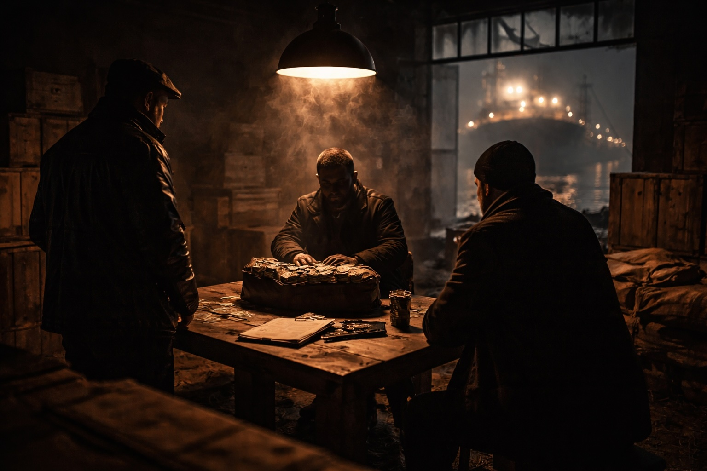

Sue and I had reunited and were back in the UK. I returned to the criminal arena, after my attempt at an early retirement had been blown asunder by events in R v Coghlan.
I had been diagnosed with post-traumatic stress disorder, rooted in the Armley strip search, and retained on a rolling boil by subsequent attacks on my character. Like a war veteran, I re-donned my bloody battle gear to face the enemy.
I resolved not to renew my practising certificate, as its absence would identify me as an outlaw. Due to my CTL cases, a new Act of Parliament had emasculated Magistrates Court and its oversight of matters to be heard by a judge and jury, thus the need to own a practicing certificate to conduct advocacy in the Magistrates Court had ended. The Magistrates Court was now no more than a post box - sending cases immediately into the loving and tender arms of Crown Court judges.
I had no desire to run my own firm, with all its inane but compulsory regulations, so I sought to work as a retired solicitor in a regulated firm. Law Society rules demanded non-practising solicitors remove themselves voluntarily from the Solicitors Roll.
The logic is sound, as, if there was a pending complaint or an ongoing investigation, their names could not been removed from the Roll. They would be in the legal wilderness, unable to apply for a voluntary removal to scupper them being formally struck off the roll. It took all of 48 hours for ‘Nicholas Ashton Green’ to be blotted from the Roll, the speed of which paying testament to the scurrilous attacks on my integrity over the years.
My erstwhile profession and colleagues seized on this delectation as proof positive I was a crook. ‘Green’s been struck off’, were the whispers through Cat A corridors. Plus ça change, plus c'est la même chose.
It was at this time, in 2006, Peter Phillip Fury entered the legal ring. Little did I think acting for him would be ‘the’ heavyweight bout of my colourful career. I initially refused to take on Peter’s case, as I was midway through the horrors in R v Davies (amongst others). Peter had established the way to the Blackpudlian was via Mrs G. Peter’s wife, Maureen, was tasked with meeting Sue in Wilmslow, Cheshire. Over a coffee, a tearful Maureen pleaded with Sue to persuade me to act for her husband. Peter had been released in 2002 after serving a 10 year sentence for conspiracy to supply amphetamines. Sue was staggered to learn Peter had spent his sentence in CAT A conditions – no CAT B, C or D for Peter. Now Maureen’s better half was behind bars facing another ‘conspiracy to supply’ allegation. They have been together since the age of 16 and, unless I worked my magic, he would not be breathing fresh air for another decade. He would not have been the trainer for his nephew, Tyson Fury, (a Gypsy King) or his son, Hughie.
I carried out my own research on Peter, as he had done on my bona fides, and all reports gave him a clean bill of health. He was a loyal man with a fearsome reputation. He boxed, but his prowess was without gloves on, outside a ring and away from the prying eyes of law enforcement officers. When tasked with recovering outstanding monies, Peter never sustained a ‘draw’, always coming out on top against any opponent. His stomping ground was upon territory others fear to tread. During the course of R v Fury, the Crown disclosed a document which placed him atop an MI5 ‘most wanted’ list, which include the likes of the notorious London-based ‘Adams’ family. His status meant it was not just in the North-West eyes were upon his every move.
It is not accidental the police place their target criminals in gangland crime in CAT A confinement. No government seeking to halt the production of a nuclear bomb would house the leading scientists under one roof. The Authorities do this, not only for security concerns regarding break-outs, but as an intelligence gathering tool. They have their men in CAT A cells, and are intent in garnering more recruits from those prisoners unable to face down a decade or more in a cell.
CAT A’s are moved around the country, in order that the police can shuffle their pack - HMP Belmarsh (London), HMP Wood Hill (Birmingham), HMP Full Sutton (York), HMP Frankland (Durham), HMP Wakefield and HMP Long Larton (Worcester). Via this shuffling, they are able to link up crime families in major UK cities and incept major operations with ‘their’ men in situ.
Initially, I was in thrall when attending these prisons. On entering, one is segregated from the lawyers who ply their trade in run-of-the-mill cases. CAT A visitors are ferried by specialist staff into the ‘prison within a prison’ which houses these primates.
I regret it took me a little time for the scales to fall from my eyes and see CAT A for what it actually was – a breeding ground for ‘grasses’. No one would be foolish enough to name any of these hard men as informants. It would not be good for their health. The more bullish and brazenly these men conversed with me, the more my hackles rose. I would permit them full leash to bull themselves up, whilst I looked on with a mask of rapture, but with an activated mind.
I have no doubt NCS/SOCA infiltrated my legal life by ensuring I acted for some of ‘their’ men. What better hiding place than to have the Outlaw representing them? I recall, after having a CAT A client acquitted of a drugs conspiracy he asked to meet me in McDonald’s on the A1. This North East haulier wanted to discuss ‘something’ with me.
I smelt a rat. I had no sense when I acted for him he was a ‘grass’, but this conference on the A1 seemed contrived. I drove to the meeting place early to watch for any covert activity. A vehicle pulled up on the car park and my punter, smiling, entered McDonald’s alone and sat opposite me.
Nothing about his demeanour troubled me. What he said, did. He opened with his thanks he had walked away a free man from Crown Court. He then put to me a proposal whereby I could earn substantial monies. He did not mention cocaine by name. However, the “transport” he referred to matched the crime for which he had been indicted. Did I want ‘in’?
For the benefit of the recording device he was undoubtedly wearing, or was located within feet of my table, I confirmed I did not. The assured manner in which I stated this left no doubt I had no interest in any future commodity consignments into the UK. I maintained eye contact and, within minutes, he departed. He never contacted me again – no postcards from sunnier climes, nor birthday nor Christmas Greetings. This contact with me post-conviction was from the State’s playbook. I wondered what SOCA had named their incepted operation upon the Blackpudlian which had ended rather abruptly. Operation “Rollercoaster”? Operation “The Big One”?
In R v Fury, there was a twist. The co-accused indicted with Peter was a man named Russell Hughes, cited by the Crown as Peter’s lieutenant on his Manchester turf. The name rang a rather loud bell. A decade earlier, whilst still contained in West Yorkshire crime, I acted in a large-scale ‘conspiracy to supply cannabis’ case.
I was acting for the main man. The Crown’s case rested upon masses of telephone data with charts showing my ‘hero’ at the centre with arrows heading out to the other co-conspirators.
Even at that young age, I appreciated the drug supply chain would have extended beyond West Yorkshire, but no one in the dock was from the Red Rose county. I hunted the data for a number which had not been attributed, but was central to the timing of drug movements along the M62 motorway network.
I duly came up with one. This mobile had been in contact with my client over 260 times over the relevant period! I began to spar with the Crown over this number and requested to know who it belonged to?
This is when Russell Hughes was flushed out of the undergrowth. In fact, he took the trouble to locate me and called my mobile. He demanded to learn what I was playing at? Was my client aware of my enquiries? I cut him short and stated,
‘Mr Hughes, I’m not in hiding. I’ll be in my Halifax office all afternoon. Why don’t you head across in order we can speak face-to-face?’
Mr H stuttered as he had not expected such clarity of thought, ‘Okay Mr Green, I’ll set off now.’
Two hours later, I had Mr H and his long time girlfriend opposite me at my desk. I imparted the nature of the Crown’s case, and then handed to him sheets and sheets of telephone billing data. I had taken a pink highlighter pen to ensure 260 calls made and received would jump out at him. There was much silence before I summed up the situation.
‘So… Mr Hughes you are either an informant, or you need to be alert to the fact the police want you to be hoisted on a bigger case than this.’
I kept eye contact with an increasingly alarmed Mr H, before he thanked me for my time and departed. He had now surfaced 10 years later in R v Fury. Peter much enjoyed my recounting of this incident. He is a bright man who takes time to disseminate information given to him. Peter would be working backwards to assess his own interaction with his right-hand man… Peter needed me at his side to train him on the set patterns of law enforcement operations and what movements to look out for on their Chess board.
‘Forewarned is forearmed, Peter.’
I would bring the legal tools to deploy in R v Fury and as you will read my comrade in arms would bring the weaponry.
The life of a CAT A High Risk prisoner is best relayed through the eyes of Peter. There would be no reduction in prison status for the gangland figure the police believed had carried out numerous acts of violence and murder. His intelligence files were crammed full of material positioning him as the man who ran the city of Stockport, with connections to the crime families who ran Manchester and Salford.
In the run up to his 1995 conviction, for conspiracy to supply amphetamines, he was held for a year in segregation units (SSU) in prisons catering for High Risk prisoners. He was shipped out regularly, without notice, within the CAT A system. The toll on Maureen’s mental health was extreme as she attempted to juggle family life, bringing up three children, with gruelling journeys up and down the motorway system to visit her husband.
It was unusual for remand prisoners to be moved in this manner, particularly as it hinders defence lawyers being able to take instructions. A short hop to HMP Strangeways is palatable, but not lengthy return journeys to prisons in Durham or York.
Whilst Peter was housed in a SSU in HMP Walton, he was permitted to exercise in a small underground room. Above him was the floor of the main prison, made from corrugated iron. Inmates could peer through the slats into this pit and see a man undertaking a fearsome workout regime.
One inmate of some bulk and reputation took it upon himself to routinely spit at Peter, believing him to be a sex offender. My client ensured this man’s face was seared onto his brain in order retribution could be dished out.
Peter was able to make daily calls to his lawyers and Maureen. He would be marched from his cell, accompanied by a number of guards. They would convey him to the phone on the CAT A landing. All prisoners would be locked in their cells before Fury made this short journey.
On this particular day, his allotted call at 11am was to Maureen and it was the same day that ‘adjudications’ would be heard by the Governor. He would attend a room on the CAT A wing to hear oral representations and dish out punishments for misdemeanours. Peter spotted the ‘spitter’ standing outside the adjudication room. He maintained a casual poise, in order not to alert the guards to his violent intentions. He picked up the phone and waited for the dialling tone signalling a call could be made…and monitored.
He began with some pleasantries, before announcing to Maureen ‘Just hang on, my slipper has come off – one sec.’ He placed the receiver down on the side and feigned to grasp his footwear.
Before the guards could react, Peter ran over to greet the gobby inmate. He began to pummel this man, who quickly dribbled blood, not saliva. It was a merciless attack, assisted by the floor having been polished. The guards could not gain traction on the shiny floor. It was a scene from the Keystone Cops, albeit this one was ‘X’ rated.
All of Peter’s pent up anger and frustration was meted out. When he was finally dragged off and frogmarched back to his cell, he recalls being in a state of bliss.
By 6pm, Peter’s Walton stay was over. Guards entered his cell and placed him in a straightjacket. Eight staff accompanied him as he was placed in an awaiting secure van and whisked away to another CAT A prison facility.
In HMP Durham, another incident occurred involving an Aussie serving a life sentence for a double murder. This antipodean had been bullying other CAT A inmates, and viewed himself as CAT A’s hard man. He even had a run in with Peter Sherry, a member of the Provisional IRA who was serving a sentence for terrorist attacks, which included the Brighton Hotel bombing, aimed at Thatcher and her ministers attending the Conservative Party conference at this seaside town. Sherry would become close friends with Peter.
In the SSU, inmates were taken out for their exercise into four adjoining cells. Wire mesh allowed these men to watch each other’s fitness regimes, which mirrored those of the military elite.
This Aussie had begun volleying abuse at Peter which would, inevitably, lead to a confrontation. However, being in isolation meant opportunities were few and afr between. The day dawned when the Aussie had collected his tray full of food and was heading back to his cell. A guard made the mistake of opening Peter’s cell door before the Aussie had made it back inside his own cell.
Peter flew out and headed straight to his opponent. He began to batter him. It took upwards of six ‘screws’ to drag Peter off his lifeless victim. On this occasion, it was the Aussie who was shipped out to halt any further attacks.
Months later, whilst Peter was within HMP Walton working out in the exercise room, the Aussie was placed with him! Their eyes met, and Peter announced ‘Oh, what a surprise – Round 2 – let’s go!’ On this occasion the opponent held up his arms and conceded defeat before one blow was landed. It could only have been the screws had set this up as the modern-day equivalent of a bear pit.
Court appearances themselves were an ordeal. These would involve strip searches and the wearing of sterile clothing with yellow and orange patches to identify the wearer as of dangerous DNA. Peter would be double-handcuffed and twelve prison officers would be assigned to these trips to court. There would be armed out-riders, with other police vehicles cordoning off roads to ensure the van could speed to the underground secure court car park. In Peter’s case, he was even accompanied by a police helicopter.
Peter recalls, on one occasion before the convoy set off, they awaited confirmation, via their radios, everybody was in place. The senior CAT A guard acknowledged he had the helicopter in his sights, and so they were ready to move. Pter then heard the piolt stating he had forgotten his bulletproof vest and feared for his life. Peter’s response was fulsome. ‘Why don’t you grow a pair – get the fuckin’ van moving.’ He was told to be silent, albeit the lead officer commented, ‘But he’s got a point – start the engine. Let’s move.’
Prison life did not get easier after Peter was sentenced in 1995. He left the courtroom at Manchester Crown Court for HMP Full Sutton, where he would be inducted for life on a CAT A wing. If successful, this meant Peter would be out of SSU and able to mingle with other CAT A prisoners.
As Peter waited in a cell to be summonsed for the induction, he requested of the guy in the next cell to turn his music down. When this was met with an abrupt refusal Peter filled him in. The screws attended to mop up the mess, and informed him he had caused “a big problem” for himself. The bloodied man was the lifers’ “bitch” who catered to the inmates’ sexual needs. There were over a hundred lifers who would be keen to secure retribution for their “girlfriend”.
After taking part in the induction process, Peter was asked to remain in the television room as the paperwork was being completed. He sat watching a programme until a Yardie, of some bulk, entered and plonked himself down in a chair directly in front of the inductee. Peter could no longer see the TV, only a large head of dreadlocks, but was aware the channel had been changed.
‘Excuse me, mate, I was watching that.’
Without turning his head, the Jamaican spat out some abuse in Patois. Peter proceeded to bury his fist in the back of this man’s head – with one blow, this inmate was rendered unconscious. Peter hopped over the chairs to sit next to the prolapsed (soon to be fellow CAT A) prisoner and propped him up. When he came to, Peter made clear he should remain calm and silent.
‘You don’t want to be a grass, do you?’
After a few minutes, the West Indian requested to be allowed to go back to his cell.
‘Go on - fuck off’, Peter ordered, as he was called back in by the officer to complete his induction as if nothing had occurred. Peter’s eyes were not on the paperwork, but rather on the movements on the landing below, where his now-conscious Yardie was organising a welcome party. Inmates were congregating in the man’s cell.
Never one to take a backwards step, after he had passed his induction, Peter headed straight to the Yardie’s cell. A diaspora was called for. He burst into the cell where the talk was of taking out the inductee.
The Yardie headed straight under the bed and the others were ‘persuaded’ to relinquish thoughts of violence. Comically, it turned out these men were from Manchester so were keen to join Mr Fury’s team.
To survive life on CAT A meant being alert and on guard was a necessity. Never show weakness. It is the law of the jungle and Peter was an apex predator.
He caused no problems for the screws. They had a job to do, and his mindset was assisted by not acting in a way whereby his social visits would be cancelled. This was Peter’s only privilege. The extent of the officers’ respect for Fury was demonstrated when he had an altercation with a man serving 18 years for raping nurses. Sexual predators should not be housed in CAT A. They should be on a protected wing (47/3) or held in isolation. This rapist refused both options, as he had a proclivity for violence. He was a man mountain who bullied other CAT A’s. He would have boiling water poured over him, and other delights, but he relished the terror.
Peter avoided this scum until the rapist was placed in a nearby cell. Peter felt compelled to act. It was within the TV room, with no CCTV, where Peter wreaked vengeance. He found the rapist alone watching telly (perhaps an episode of ‘CSI’) and, within four minutes, Peter had pummelled his victim so badly, he needed treatment in hospital. The alarm was raised, and around six officers jumped on the ‘Manc’ and tried to prise him from the unconscious rapist.
When Peter ‘turns’, it is as if his mind has been taken over by a higher power. It took a little time for the cries of the screws to lodge in his brain. When they did, he stood up drenched in blood.
He was instructed to walk calmly back to his cell for the benefit of the cameras on the landing. He did just that and, looking at his hands, he recalls they looked like ‘two lumps of fat’. Around 3 hours later, the inevitable happened and he was called into the Governor’s office. He clutched his hands behind his back, as they had swollen to such a degree they would not fit in his trouser pockets.
Peter maintained he had been quietly watching television. He had no interest in what others did on CAT A, referencing an inmate who had been murdered days before.
‘What are the cuts to your face?’ the Governor enquired.
‘From the gym.’
‘What? From weights?!’
‘No – sparring.’
‘Mr Fury, I have looked at your files and you are the only inmate that fits the profile for this attack.’
There was a pause before he demanded, ‘Show me your hands’.
The game was up, but before Peter had the opportunity to fall on his sword, a female prison officer chipped in.
‘Look, Guv, why are we coming down so hard on this prisoner when a rapist should be on the VP wing?’
Another officer perked up and added, ‘How do you think we feel, having to deal with a man like that? Let alone the prisoners?’
The Governor was shocked at these interventions, and after a short silence asked one further question.
‘Did you carry out this assault, Mr Fury?’
‘Definitely not me.’
Shortly thereafter, Peter was back in his cell and he heard nothing further about the assault.
‘Shit happens in hostile environments, Nick’, he would later recount to me.
So this is what daily life is like within the walls and corridors of CAT A. It is not for the faint of heart.
On my first visit in 2006 to see Peter in CAT A HMP Strangeways, after relenting to Maureen’s pleas to Sue, I expected to receive a warm greeting. Instead, I faced a man worn down by the system whose resolve was ebbing away. His current legal team, a central London outfit, Henry Milner & Co, had recently lost a day-long application to dismiss the ‘conspiracy to supply’ charge. They were now advising Peter to consider pleading guilty!
In Manchester Crown Court, an eminent QC had mounted the submissions to chuck the case through lack of evidence. The dismissal hearing had cost Peter £50k. His legal team were citing, in support of a guilty plea, the bias shown by the trial judge and the fact Fury’s name was on the Establishment’s hit list to be removed from the streets of North West England.
This talk of throwing in the towel was anathema to me. How could Peter endorse such a battle-less outcome? He would never countenance this as a boxing trainer. His pugilists would need to be carried out of arenas on stretchers. I understood that the trial process, even for a CAT A, is debilitating. It becomes a thankless task when one’s own legal team begins to wave the white flag.
The Crown’s evidence pivoted on three incoming calls to my client’s mobile from the head of the Liverpool gang. These lasted, in total, around two minutes. Within hours of these calls, the 10 tons of cannabis departed Liverpool along the M62 into Manchester. The Crown trumpeted these short communications as the ‘meeting of minds’ between the two cities which sealed their ability to transport the illegal cargo. Fury was pitched successfully as the ‘fixer’, who married the Liverpool end with the ‘Mancs’, albeit in a short two minute ceremony.
Comically, the leader of the Scousers was tagged only as ‘Pirate’. His birth name was unknown, but his Liverpool Buccaneers had stored this man in their mobile phones under this moniker.
Despite the millions of pounds expended on this, and linked SOCA, operations I was meant to accept the prosecuting authorities could not identify the leader of the Liverpool outfit. Months of surveillance and covert monitoring had failed to flush him out. I pointed out Pirate’s billing data showed the same cell site being ‘hit’ when he slept (last call) and when he awoke (first call). It was bollocks, but it was a position maintained by the CPS. Whoever he was, SOCA believed this harbinger of drugs was now on the run or, rather, adrift on the high seas.
One learns from experience the prosecution touts the paucity of evidence as proof positive of a gang leader’s guilt. Their argument being, it is impracticable to expect a large body of evidence to exist against shadowy, arm’s-length, all powerful figures behind drug empires. It is an insidious approach, but difficult for a defence team to grapple with in front of juries steeped in TV crime dramas.
Peter’s mindset was not assisted by his current legal team praying in aid of the fact the CPS had already (as in R v Davies) successfully prosecuted gang members from both cities. These convictions could be paraded in R v Fury, which would prejudice the jury, not helped by the anticipated ruling that the trial judge would allow Peter’s 1996 10 years for conspiracy to supply conviction to be laid before the twelve members of the public.
All was not sweetness and light, but a defence lawyer’s role is to do his job. One’s home may have shit electrics, but if you employ a qualified electrician you are entitled to his competence, not negativity. You seek lightness, not shade. It may be taxing, take time and you may annoy the neighbours, but get on with the task in hand.
It was against this backdrop Peter asked of me, in a somewhat condescending way,
‘What can you, therefore, do for me, Nick?’
Our eyes met, I leaned in, and responded calmly, ‘I do not know, Peter.’ I paused before adding, ‘But, hopefully, you will find out.’
There was silence. I broke it with, ‘I do not audition.’
There was more eye contact, and silence, before Peter held out his hand. I shook it, to identify us as fellow Outlaws who would now be riding into the enemies’ ranks. Neither of us are “talkers” – not Peter in his world nor me in mine. We would replace the white flag with one flying the Red Rose. We would head out from the safety of the harbour in hot pursuit of the Jolly Roger. I fully expected to be greeted with mountainous seas, but nothing in my career to date would prepare me for what Mother Nature had in store for our vessel.
I buried my head in the case papers after I notified the Covent Garden outfit their services were no longer required. Posh postcodes do not house brave hearts. I needed to unfix the ‘fixer’ and, if I was able to do so, the judge’s structured ruling would collapse. With a Pirate on the loose, I knew there was hidden treasure. The map uncovering its location would be via the dissemination of the telephone data.
You read in R v Davies about the sleights of hand deployed by SOCA when disclosing to the defence material originally supplied from the network providers’ computers. Once more here, in R v Fury, the data was in a chaotic format, to ensure defence lawyers would be unable to re-piece the true forensic history of contact between the cities of Liverpool and Manchester.
Echoing my confrontation with Russell Hughes years earlier, I noted mobile numbers which must be relevant to the drug supply which had simply not been obtained by SOCA. A few had complete cell data records disclosing incoming, outgoing and cell sites. It was a patchwork of contact, not helped by the randomness of the limited time periods SOCA had requested from the phone companies. Others, which had been secured, were limited to outgoing calls.
Patterns, associations and movements appeared after many hours of hard graft. SOCA, knowing full well defence teams have a fraction of the time and resources at their disposal.
This exercise culminated in me sending lengthy, albeit focused, requests for disclosure to the CPS based on the phone data they sought to rely on. SOCA’s blue-eyed boy, Mark Ainsworth, was their junior counsel. He was in situ in R v Davies, so was fully aware of the bullets the Blackpudlian would be firing in relation to the integrity of the cell data records.
Ainsworth and his leader, Graham Reeds, stormed in front of their headmaster on the bench, crying for the defence to be chastised for the temerity of challenging the telephone data.
“It is nothing more than a shopping list, your honour“
“They want the keys to SOCA’s warehouse“
“It is a fishing expedition, in the vain hope something of benefit will turn up“
This mantra faces every defence counsel who is instructed to pursue detailed disclosure requests. In turn, the judiciary are taught to adopt these trite phrases when pushing aside defence applications.
Serendipity stepped from the shadows, as one mobile number I was flagging up, the record for which was not obtained by SOCA, rang a bell with Ainsworth. He knew it belonged to a drug dealer he was prosecuting (on behalf of SOCA) in Preston Crown Court! This drug dealer’s vehicle had been bugged, and his conversations had been captured and transcribed. In a call, within days of the seizure of 10 tons of cannabis, it recorded this man confirming to a passenger that this seizure had nothing to do with Peter Fury!
How had Ainsworth, along with CPS, failed to disclose this to the men who had already been convicted and were serving lengthy sentences? The answer is, it was never meant to come to light. In these earlier prosecutions they wanted to keep their powder dry on the “fixer“.
Any attempt to engage the judge on this suppression of evidence would receive short shrift.
“Well, you have it now – so what is your point? Get on with it.“
We were meant to kiss the feet of junior counsel for being so transparent, who suddenly had memory recall. No one criticises SOCA’s blue-eyed boy. Peter Wright (he of the ripe Hull banana) had fulfilled this role as the North West’s junior counsel of choice in the 80s and 90s. Wright had been a different beast and, on any view, was a cut above Ainsworth in tactics and advocacy. Wright rose swiftly to QC status, and thereafter was appointed as the youngest ever Treasury Counsel. This is the trajectory for those who are ‘one of them’ in the legal system.
The treasure hunt was hotting up and two further revelations holed Pirate’s ship below the waterline. I received word, from a ‘source’ I trusted, that the case being prosecuted in Liverpool Crown Court had a crossover with R v Fury.
SOCA hide their linked operations by shoving them into different Crown Courts. Statute provides cover, by making it a contempt of court to disclose material served under the CPIA outwith the legal teams instructed in each individual case, and their clients. SOCA had every reason to believe the Liverpool case would remain their sordid secret.
Mr G, never one to stand on ceremony, hunted down the Liverpool case papers as I knew the telephone data would expose SOCA’s trickery. As in R v Coghlan, and the taped conversation with a protected witness, I would claim immunity from prosecution by citing the wider public interest in justice been carried out. The likes of Peter and Arran not being keen to have representing them a man of limited resolve and ‘bottle’.
Once the papers were obtained, and digested, it was a “Yo, ho, ho“ moment. During the currency of SOCA’s cannabis seizure, they were monitoring a massive cocaine conspiracy by people linked directly to Pirate. Mobile numbers the Crown claimed were unknown were suddenly being flashed in a neighbouring Crown Court’s dock!
When the timings of the calls were conjoined, it became impossible to separate the cannabis from the cocaine communications. SOCA had carefully ensured the editing of the cell sequences, separating out the ones beneficial to their noble causes in both courts. In their minds, there was no need to alert the two Crown Court judges, as history demonstrated once engaged in the available evidence the judiciary would order disclosure be made to the defence teams.
My lead counsel was Dominic D’Souza, who I had briefed after removing the QC instructed by Henry Milner, who had lost the dismissal application and was proposing a guilty plea. You will read in chapter “X” (in Volume 2 – ‘Gigolaw’) that Dominic was later to be targeted by the News of the World, in an undercover sting executed by the Fake Sheikh. Dom appreciated, and revelled in, audacious legal submissions and hence my strategy of revisiting the judge’s ruling was met with a smile – not “Mr Green, Mr Green, Mr Green, are you trying to make your clients case worse?“ The renewed submission would be a simple, but bold, one. The inference drawn by the judge was unsustainable, as Pirate’s calls were as consistent with cocaine as they were with cannabis!
Critically, there was no reference to Peter Fury in the Liverpool case papers. This meant a third inference was in play - namely the calls from Pirate had been entirely innocent in nature. If I place the football on the penalty spot, D’Souza would hit the back of the net. Unlike other defence counsel I’ve had the misfortune to instruct, who end up being ‘nutmegged’ or shoot wilfully high into the stands.
Our revisit to the abuse ruling could not be portrayed as a second bite at the cherry. The new material at our disposal had been suppressed, and it drove at the heart of whether Fury was a ‘fixer’ in a cannabis supply. It would be unseemly for the CPS to oppose the application, as their dabs were all over the fresh material, having deployed it in Liverpool and Preston Courthouses.
Henry Milner got wind of Mr G’s intended revisit to the abuse, and got word to Peter on CAT A that I was talking “crap”. In law, he asserted, there could be no reopening of the judge’s earlier ruling. It had been harsh, but the judge ensured it had been meticulous.
Peter laughed, as he heard my foul mouthed rant in response to this aged lawyer’s settled opinion.
“No doubt he told you I was a struck-off solicitor, too?!“ I quipped.
I would simply have recourse to Lord Lane’s guiding principle “If justice demands something, a way must be found“.
It got better, as upon scheduling the Liverpool cocaine phone traffic, and factoring new data flushed from the CPS in R v Fury, a third string to my bow could be plucked. I could now demonstrate, weeks before the calls between Pirate and Fury, the Manchester end was not only in contact with the Liverpool end, but via cell sites being hit, I could show them travelling to the area in Walton which housed the Scouse gang. “Yo, ho, ho.”
The inference Peter was the ‘fixer’ evaporated into the Mersey air. The carefully edited deception by SOCA, that the 10 tons had been the first delivery, had been blown out of the water. Peter remained concerned that the trial judge had to be removed, or he would find a way to bat away our new legal arguments.
“Leave him to me, Peter – I will keep his continued presence under review. We must remain focused on our case and the power of it. We must not be derailed by a maligned view of the judge.“
“Okay, Nick.“
My ensuing brief to D’Souza set out the power of the three fresh strands of evidence and, borrowing a speech by Brutus in Julius Caesar, I ended with:
“There is a tide, Dom, in the affairs of men.Which, taken at the flood, leads on to fortune;Omitted, all the voyage of their lifeIs bound in shallows and in miseries.On such a full sea are we now afloat,And, with Pirate in our sights,
we must take the current when it serves,Or lose our ventures.”
Before we could board Pirate’s vessel, and instigate a mutiny, my mobile rang:
“Is that Mr Green?”
“It is.”
“I am a custody officer, and I have a man under arrest asking for your services.”
“Who?” I enquired
“Peter Fury... he has been arrested in relation to money laundering charges.”
The State’s Armada had landed on the scene. It was a breathtaking move. Peter had been hauled out of CAT A and transported to a local secure police station. Thank God Peter had not pleaded guilty to the drugs conspiracy, or he would have been facing the new charges with his feet and arms bound together. He would not be breathing fresh air for well over fifteen years. There would have been no opportunity to celebrate the Gypsy King’s successful title bout with Klitschko. Maureen would have been on further torrid journeys to CAT A’s throughout England.
When I receive this call, I was in deepest Cambridgeshire about to visit John Dawes in CAT A in HMP Whitemoor.
“Nick, carry on with your visit. No need to send anyone. I will conduct the interviews myself.“
This he did, and, after a raft of interviews, he was deposited back in his CAT A cell clutching 10 counts of money laundering, threats to kill and extortion, which, if convicted along with the existing conspiracy charge, would render Peter liable for sentences in excess of 20 years.
What shocked me the most was these money laundering offences spanned 1996 to 2007! I felt queasy at the prospect of another room being crammed with boxes of prosecution evidence.
What I learnt was the State’s interest in Fury had not ended with his incarceration in 1995 for drug supply. The CPS was now alleging my client had misled the sentencing court when he had listed his assets in the confiscation proceedings. These follow on from a conviction for drugs and, in 1996, the court accepted the realisable assets amounted to £50k.
The benefit from his drug venture was fixed by the court at £180k, but all they could recover was the assets which were in open view. Peter received a sentence of ten years imprisonment for conspiracy to supply together with the lodging of £50k in satisfaction of the confiscation element of the overall punishment. Peter sold his Porsche and Range Rover to a friend to discharge his indebtedness to the State. This ensured, on his release, he could be reunited with his PPF1 number plate, which now, in 2021, graces his Bentley.
The Crown were now asserting Peter had around 5 million in “hidden assets”, which he had secreted away before his 1996 sentence. They could not identify where the majority of the monies were stashed, but they could point to properties bought since 1995 which had increased substantially in value. These included Park Home sites, houses in Styal (Wilmslow) and Belgium plus commercial land.
This forensic trail led inevitably to Maureen being cited as a co-conspirator, and she would appear in the dock alongside her husband. Until his release in 2002, the Crown alleged, Maureen and other close relatives assisted in moving Peter’s ill-gotten gains into assets. Maureen’s lavish spending sprees in Harrods, Harvey Nichols and other top-end stores had been monitored when designer clobber was bought with cash.
I realised Maureen was to be our Achilles heel, as Peter would not permit his childhood sweetheart to be carted off to jail. At this stage, there was no prospect of negotiating a ‘deal’ with CPS, as their objective was to bury my client, not negotiate with him.
The evil with these new charges was, if a jury convicted Peter, he would have to surrender the £5 million or serve a long sentence on top of the one dispensed for the charge of money laundering. He had halted this in 1996 by handing over 50,000, but here, without possessing the millions, he would be serving another sentence in default of payment. Unlike the criminal sentence for the money laundering (which would be discounted by a half) the confiscation element would be served in full! We had no doubt every hour would be served, once more, in high risk conditions. The prevailing climate was chilly, and with the trial judge intent on securing convictions, the future course of R v Fury looked bleak. SOCA was wreaking vengeance for Peter’s reign of terror in the North West and beyond.
I was missing a rather large piece of the jigsaw, as this level of intrusion by the State over so many years is unheard of. It was time to sit down with my client for him to regale me with the forensic history since 1995. What I was to be told makes other chapters look like child’s play. John le Carré and Elmore Leonard could not have come up with a more fiendish plot.
I booked a full day’s conference in CAT A, and took with me a virgin A4 notepad which, by the conclusion of our discussion, was bloodied with notes of revelations from Mr Fury.
‘Are you ready for my account Nick?’ Peter asked, and I as I sat across from him at a small table in CAT A.
‘As ready as I ever will be.’
He began to unravel the history, which commenced with the startling revelation his initial lawyer in 1996 was a participating police informant. Charles Anthony (Tony) Darnell solicitor, a sole practitioner from Stockport, had attended the police station to deal with all four men arrested for conspiracy to supply cannabis. Darnell ensured he gave conflicting advice to his clients, which led to the interviews being able to be deployed by the prosecution at the jury trial as demonstrative of the men lying to save their own skin. The police bust had been under a formal ‘Operation’ which had been underway for some time. It ended with arrests on a lay-by near Stockport. A man well known to the police, nicknamed ‘Slim’, had departed the lay-by minutes before the bust, and comically, despite a surveillance team’s presence, he had been erased from the case papers. This man’s best pal was none other than Tony Darnell, who ensured his mate was not mentioned in the interviews.
Peter was close to Darnell, and both had travelled to Holland in the run-up to the arrest. My client smelt a rat after being de-briefed by his co-conspirators. These discussions exposed Darnell’s duplicity in the conduct of police interviews. His hackles rose when Darnell asked him to list all his assets for a bail application! The cover for this request being the entirely false assertion CPS would agree to bail if he put forward half a million pounds security. Peter declined and, within a week, Darnell was sacked by all men.
I should stress Peter is not a man who likes the sound of his own voice. He prefers to listen, then act where necessary. He is not prone to exaggerate or wasting either his time or mine on fabricating stories. I had not a shred of doubt what I was hearing was based upon his own personal knowledge with no frills.
Peter was able to update me on fact Darnell, in 1997, had been struck off the roll of solicitors after he was given a sentence of 12 years imprisonment for the supply of Class A drugs! Darnell had outstayed his welcome in the drug world, and appeared to see Fury’s incarceration as an opportunity for a power grab in Stockport.
The police carried out their own undercover sting on Tony, by deploying an undercover female officer posing as one of his punters under arrest for possessing cocaine. Upon her release, she burrowed into his drug-riddled life, and those of his associates, which ultimately exposed Darnell as a crook. Police ensured the ‘escapee’ from the lay-by, Slim, was once more erased from the prosecution in R v Darnell; a man who spent his days by Darnell’s side. It is scum like Darnell who taint coppers’ minds (along with the judiciary), who then believe those who represent target criminals are in league with their nefarious actions – alternatively you can ply your trade with immunity, if you are feeding information to the police (unless, like Darnell, you go rogue). If, like me, you simply wish to apply the criminal law with no fear or favour, you are seen as a man to be taken out. You are neither use nor ornament to law enforcement.
At this point in our conference, I took a deep breath as I knew Darnell was to be a mere morsel in a more Gargantuan banquet. Advising Peter, post-Darnell, came one Paul Gibbon, a solicitor from Manchester who dealt in CAT A cases. I will refer to him as ‘M’ for reasons which will become apparent.
‘M’ did not pursue with the CPS the issue of whether Darnell had been a participating informant, nor did he raise the absence of Slim from the surveillance logs when he departed the lay-by after the meeting of two vehicles. Both these issues would have halted the case in its tracks, as CPS would not have provided disclosure on those two men to the defence teams. The inevitable convictions followed after a jury unanimously rejected their innocent accounts as to how kilos of amphetamines had been found in the parked car. Their defence centred on the lay-by meeting being in relation to a car swop, and not the distribution of illicit drugs.
Peter headed off to HMP Durham to await the sentence/confiscation proceedings. ‘M’ attended and showed Peter a sensitive police document on Darnell. It confirmed his status as a participating informant, and outlined his role in R v Fury.
‘What?!’ I shouted, unable to comprehend why a defence solicitor should be advancing the needs of the boys in blue. Given Peter’s status as a ‘gangster’, disclosing this openly placed Darnell’s life in danger. I have no doubt these conferences with ‘M’ were all monitored, and the discussions reduced into transcript for the NCS to pore over.
The sentence passed was one of ten years, which, for a first drug conviction, was harsh, but the judge would have been informed in the ‘back room’ all about the NCA’s knowledge of the antics of Peter Philip Fury. The police were fuming, as they had been unable to uncover the location of Fury’s assets, despite searching and following leads for months since his conviction.
I took a few more deep breaths, after which he told me an independent senior lawyer, Keith Dyson, had, on his instructions, gone to see Darnell on a prison visit. The disgraced lawyer wanted to make things right as he realised the police had shafted him. He desperately wanted to douse Peter’s anger, as he had first-hand knowledge of his capabilities. He confirmed his “police” role in R v Fury. ‘M’, upon being debriefed by Dyson, attended HMP Durham to update his client. He stated it would be of “no consequence” to an appeal! No appeal against conviction was lodged.
When I later confronted ‘M’ and Dyson about this history, they claimed memory loss. Initially, Dyson even denied attending to see Darnell in prison. Both stated no file existed, albeit Peter’s bank records showed he had paid Keith Dyson for his work re Darnell.
‘Alzheimer’s by proxy, Mr Dyson?’ I retorted. I was conscious these men had no intention of assisting Peter Philip Fury, and thereby garnering the wrath of the NCA.
‘I’ll get us a coffee, Peter,’ I announced. As I left the room to go to the drink dispenser my head was spinning with these revelations, but I had no idea that when I returned to the room Peter would drop ‘the’ bombshell.
‘M’ was a close friend of John Gold, a senior member of the Home Office. They enjoyed rounds of golf. Peter wanted to be downgraded from high risk and floated the idea of having firearms seized to secure a CAT B status!
‘Sorry Peter,’ I stuttered, ‘you were to surrender firearms to make you not a high risk prisoner?!’
What was this madness? Peter did not pause nor seek to justify his stupidity. He was told by ‘M’ they could bypass the NCA and deal directly with Mr Gold. The Home Office agreed to reduce this agreement into a formal document to be signed by both parties. Simons, who had been Peter’s junior counsel in the criminal case, voiced concerns over the merit of entering into such a bizarre and dangerous contract which could backfire spectacularly. After all, the defence team were well aware of the NCA’s hatred for Fury. I indicated to Peter I would have walked away rather than countenance such a reckless course of action. “Who“, after all, would it be who recovered the firearms - the police, not the Home Office. How on God’s earth would this process not result in Mr Fury becoming public enemy number one in the UK – replacing drugs with firearms? In the 90s in England, weaponry had links (9 times out of 10) to the IRA (Irish Republican Army).
‘How many firearms, Peter?’
‘’News at Ten’, on the night, referred to it as the largest consignment of explosives and firearms ever discovered on mainland UK, Nick.’
For the first time during this meeting we both fell silent. My hand was firmly attached to my forehead with my thumb and forefinger boring into my temples. I was staring at my notepad when Peter added,
‘Gibbon did this on at least two other occasions, Nick, with CAT A prisoners.’
‘I must’ve missed the fucking law lectures at college on the recovery of firearms – I must’ve been in the boozer, Peter.’ We both managed a brief laugh, releasing the tension.
‘Was he trying for a knighthood, Peter?’ More laughs, but the sad reality was Peter followed through on the ‘deal’. By doing so, he ruined his life and that of his family.
As ‘M’ was tucked up in his crisp, linen bed sheets in the Cheshire countryside (after having phoned in to confirm the location where the guns could be found), his client was dragged out of his CAT A Durham cell at 4 am to be dumped in a room facing two MI5 officers. In short order they informed Peter the document he had signed with the Home Office was worthless. It would not be honoured.
‘You can shove it up your arse, Peter.’
‘No CAT B, then?’ Peter stated in a sarcastic tone. His attempt at comedy was met with a warning from the two faceless, powerful officers who were used to compliance, not insubordination.
‘Give us names, Peter,’ the officer paused, before delivering, ‘Unless you do, you will be banged up in CAT A for another 10 years for masterminding this seizure.’
Peter could not fault them for their extreme honesty, but he realised, even under this duress, he was still holding an ace, albeit a tad tattered one. The history of the weapons, he assessed, could never see the light of day or the State would be forced to come clean and senior State officials, including these MI5 officers, would be forced to give evidence before a jury – and, no doubt, an ensuing Public Inquiry.
After a pause, Peter stared into the officer’s eyes and replied calmly:
‘I will promise you this. If you attempt to hang me out to dry,’ he paused, ‘I will assassinate Gibbon.’
The MI5 officers glanced at each other, and one stated:
‘Peter – we do not question your ability to come good on your threat. After all…if you can deliver up weapons and arms from high risk CAT A, we have no doubt in your capabilities.’
All present in that room had reached an unspoken and unsigned ‘deal’ of their own. MI5 would investigate, but would thereafter advise for Peter’s file to remain “unsolved”, and under lock and key.
I have been able to insert this added bit of spice, as, in a recent meeting with Peter going through a provisional draft of his chapter, he regaled me with this death threat to a Solicitor of the Supreme Court.
‘And, Nick,’ Peter went on, ‘later the same day, the MI5 officers returned, but this time had Gibbon seated between them.’
‘A rose between two thorns’, I quipped, even though I was staggered to be learning of these events.
‘I repeated my threats in front of Gibbon, who began to twitch, Nick. He could not make eye contact.’
The bottom line was, MI5 were only concerned to establish if the guns had been provided by the IRA. They would not entertain any squabbles with the North West Regional Crime Squad.
MI5 went away and assessed the men housed in CAT A in HMP Full Sutton. It did not take them long to be face to face with Mick McAvoy, who they alleged had plotted with Peter to surrender the weapons. They got as far with Mick as they had with Peter. Intimidating tactics, which work on many CAT A prisoners, would not disturb the sleep of McAvoy who had been one of the team in the 2 hour heist, on the 26th of November 1983, known as “Brink’s Mat”. The Trilby-clad McAvoy rounded up the guards, tied them up, and poured petrol over them. If they did not give the keys and combination numbers to the vaults, where three safes were located, they would be burnt alive. The guards cooperated, and the Brink’s Mat robbers could not believe their eyes when, after gaining entry they were confronted, not with cash, but three tons of gold bullion. McAvoy wished the guards a ‘Merry Christmas’ as the gang drove out of Heathrow in a van weighed down by a hunk of gold. McAvoy was implicated and was charged, leading to a 25 year sentence. This resulted in his family having to care for his two newly acquired Rottweiler dogs named…“Brinks“ and “Matt“.
MI5 were going through the motions, as they were not daft enough to believe Peter and Mick, with their pedigrees, would entertain cooperation with the State. Their conclusion the guns’ source remained a mystery, permitted Mr Gibbon to continue to ply his trade and remain on terra firma.
Peter, far from taking a backward step, would have some fun with Gibbon in attempting to have the Home Office honour the signed contract – even though it would be ripped up if the guns were traced back to Peter Philip Fury.
‘All this for CAT B?!’ I uttered, struggling to comprehend the madness of this enterprise.
This sad history harked back to the case of Liverpool gangster, John Haase. He had been the first to follow this act of surrendering weaponry, at a time when gun violence on the streets of UK cities was front-page news on both the red tops and tabloids. Haase’s corporation from within CAT A had led to a pardon been granted by the Home Secretary, Michael Howard; a man who, according to Ann Widdecombe, had “something of the night about him”.
Haase was jailed for 18 years, and was one of the first Liverpool men to deal directly with the feared Turkish drug syndicate. Haase and his co-accused, Bennett, then set about planting machine guns throughout Merseyside, which the boys in blue recovered – one stash secreted in a red squirrel sanctuary in leafy Formby!
This led to the sentencing judge, inappropriately named Lynch, writing to the Home Secretary, Michael Howard, requesting he consider pardoning both men for their assistance to the authorities.
Howard did just that, but when both gangsters appeared back on the streets of Liverpool within a year of their 18 year terms being handed down, tongues began to wag. The MP for Walton, Peter Kilfoyle, began to question what lay behind the decision to free these men.
Getting to the truth about the association between law enforcement and gangsters was, just as Gillard found in his Olympian saga, is at best murky, and always dangerous. One officer, Paul Cook, was charged with corruption in 2010 for his role in the pardoning exercise.
Haase overplayed his hand, when he falsely accused the Home Secretary, Howard, of receiving a back hander for sanctioning the pardon. After a massive police operation, Haase and Bennett were re-arrested and ended up with 22 years sentences in 2008 for the merry dance they had concocted. Haase was only released in 2020.
It was, therefore, not rocket science that Peter’s dalliance with weaponry was utter stupidity and would backfire. ‘M’ had not been Haase’s lawyer, but I did flush out they had met during the surrender of guns process – no doubt, they only talked about the football…Peter learnt ‘M’ had dealt with at least two other CAT A prisoners involved in gun deals with the authorities.
No ‘Operation’ was ever mounted on ‘M’, nor was he ever spoken to by the police as to his “dealings” in firearms. I leave it to the reader to assess how the Outlaw would have been treated if he had delved into a stockpile of weaponry. I could have offered to surrender my Chinook as part of a deal for leniency!
Our visiting time was up (thank God) as I needed to down some alcohol. On exiting HMP Manchester, I headed straight to the city centre pub called ‘Peveril of The Peak’ and sunk 4 pints of bitter in quick succession. What the hell was I to do with all this diabolical history? How was I meant to function in the marital home as a father/husband with my mind crammed with corruption?
I cancelled all my appointments for the following day. I resolved to travel to a secluded spot in the Peak District. I needed space and silence. I hoped Mother Nature would befriend me and provide me with clarity of thought.
I spent the day on a wooden bench in bright sunshine in the Peak District with the hill ‘Tegg’s Nose’ as a backdrop - it should have been called ‘Sow’s Arse’. I converted my notes into the body of a defence case statement (DCS), re-write after re-write, until it set out the forensic history in all its sordid glory. If the CPS wanted to delve into Peter’s life between 1995 and 2008, let us have the full account - warts and all. Let us not have an edited version, cut to fit their new robes. Let me be the one to bring openness and transparency to Peter‘s going-away party, being thrown by SOCA.
As an Outlaw, I have no interest in the old boy’s network. Nor, as a result of my childhood and interaction with the legal system, had I any interest in my own welfare. I had been given the ammunition by Peter Philip Fury, and I fully intended not only to fire rounds, but for these to hit their targets.
How could CPS ever attempt to revisit the firearms seizure? How could they account for a 10 year delay in charging him? How could they sully themselves by disclosing the ‘deal’ signed by the parties? How could they disclose material on Darnell? How could they explain the role of ‘M’? I would also be inviting the absentee from the lay-by, Slim Shady, to the shindig.
One incident which did not make my draft of the DCS, was a 1994 fallout between Peter and ‘M’ in which Peter attended his lawyer’s office and pinned ‘M’ by his neck to the office wall with the threat that, unless he bucked up his ideas, Peter would chuck him out of the second floor window. I smiled as, if my tactic of introducing the firearms backfired, I sensed my own exit would be chosen from a higher floor! If ever ‘Mr Green, Mr Green, Mr Green, are you trying to make your client’s case worse?’ was more apposite, it was at this moment in my criminal career.
I did touch base with a few senior counsel to test the depth of the waters ahead. All were as one – ‘leave it well alone, Nick’. In many ways, this is what I expected to hear and it pleased me. I required the ‘green’ light from only one person, and he was no shrinking violet.
‘Put the lot in, Nick,’ was Peter’s clear and concise instruction.
There was a ‘Brucie’ bonus tucked away in the DCS, which would turn the screws a little tighter on the prosecuting authorities. It was this – shortly after his release in 2000, he was visited by two senior officers from Scotland Yard who had a ‘deal’ of their own. Join the good guys as an informant and he could live carefree, maintain his assets, and earn more via ‘authorised’ drug and firearms dealing.
‘Why come to me?’ Peter enquired.
‘You are well connected and trusted, Peter.’
‘Officer’, Peter stated calmly, pointing at his colleague, ‘would you grass him up?’
The simplicity of this response had them, shortly thereafter, bidding farewell to Fury at the doorstep of his Lake District home. The battle lines had been drawn.
In case you feel I am over-egging the pudding, I can do no better than quote extracts from the DCS itself:
‘Mr Fury met with a Home Office representative, John Gold, at HMP Full Sutton. Mr Fury's legal advisers were present. A deal was agreed with the Home Office and recorded in writing. Mr Fury was then advised to provide the information to the Home Office. The information Mr Fury provided only came to him while serving his sentence as a High Risk Category A prisoner. The terms of the agreement with the Home Office were that Mr Fury would only supply information leading to the seizure. He would not provide names or other assistance. In exchange for his co-operation Mr Fury's security category would be reduced to Category D and he would be granted parole as soon as he was eligible.
The agreement was subject to the caveat that if the seized firearms were traced back to Mr Fury the agreement would be a nullity and Mr Fury would be prosecuted. The agreement was approved by Mr Gibbon, Mr Simons and also the Home Office. Mr Fury provided the information to Mr Gibbon who forwarded it on to the Home Office. The firearms were seized in Gravesend in Kent. The seizure was reported in the national press. However, after the seizure Mr Fury was visited in HMP Full Sutton by officers from Special Branch and the Metropolitan Police. They attended unexpectedly without Mr Gibbon and told Mr Fury that there was no deal. They said the agreement was not worth the paper it was written on and that unless Mr Fury further co-operated he would be serving a long time in prison. The officers further stated that they had been in contact with the North West Regional Crime Squad, Manchester. They believed the seized weapons belonged to Mr Fury, and that they had been driven down from Manchester to Mr Fury's associates in order to distance him from the seizure. Mr Fury told officers this was not correct. He said he would "not name anyone" and he would be contacting Mr Gibbon to enforce his written agreement.’
The DCS read like a crime novel, pitched for a future blockbuster at the cinema. A reporter, in recent years, offered to write Peter’s life story. I was tasked with meeting him in Alderley edge, to run through the ‘best of’ from my client’s colourful career.
The man was no “Gillard“, and I could see him becoming increasingly nervous and agitated as I recounted events in the 90s. After an hour in Costa Coffee, he shook my hand limply and returned to his home in Buxton.
A week later Peter called me. ‘What did you tell him, Nick?’
‘The truth’, I replied, giggling, ‘why?’
‘He’s not been seen, or spoken to anyone, since your meet – his curtains are drawn…’
‘Well – it was never a story for the faint of heart, Peter.’
This North West hack never returned to his ‘furyous’ project. Peter’s view was any writing of his history should be carried out by Mr G. It did illustrate that, to folks outside “gangland” crime, even when only having their toes dipped into these icy waters, the re-telling was bad for their well-being.
By the stage of the DCS, Dominic D’Souza had bitten the dust. I was concerned as to his welfare. His life was a mess and he would, on regular occasions, go on the missing list. I had no issue with dragging these cases up a steep incline, but intermittent contact with my counsel did nothing to quell my post traumatic stress. I was in a constant state of agitation. My pathways were oftentimes over ravines, and Dom was taking the piss. It is no part of an instructing solicitor’s role to dispatch a fee earner to a city centre hotel to bang on counsel’s door, for upwards of five minutes, to ensure he awoke. Fee earners would report back to me they would, on occasion, request assistance from hotel staff to unlock the ‘D’Snoozer’s’ room.
If not for his abilities (when conscious) in a court room, I would have sacked him long ago. But we were friends and I was fond of his biblical nickname for me – ‘what’s up, Demus?’ came his cheery cry, when he finally responded to hundreds of my voicemail messages and emails. Like Nicodemus, I enjoyed Dom’s teachings but the time had come for me to rub embalming fluid on his carcass.
The crucifixion occurred at Manchester Crown Court at the time we were to address the trial judge as to our demand he revisit his earlier ruling in rejecting the ‘no case’ submission. I had met Dom the previous night for a couple of hours to run through the complex issues, and discuss tactics. In the cafeteria of the courthouse, I was chilled to the bone when, with a vacant expression that I still recall, he stated he could not remember receiving a briefing on the points to be made to the judge!
I resolved to remove him from R v Fury. The sad decision made easier when he refused to engage with me about his personal problems. He insisted he had none.
By the time of drafting the DCS I had a new London counsel at the batting crease. Ian Bourne QC would be our leader and William Davis as junior counsel. It was a masterstroke to introduce a Queens Counsel at the moment we were to expose the cesspit which lay at the heart of North West policing in the 90s.
Bourne was no maverick and, moreover, he was able to dress himself and attend court on time without assistance! He sat part time as a judge in Snaresbrook Crown Court in London. He would not sanction a defence team flying a kite. He was a good man and he got on well with Peter. He had heard rumours that the 80s and 90s have been like the Wild West up north. Nothing prepared him for the dissemination of the activities of the police/CPS/counsel/defence/judiciary in the life and times of Peter Philip Fury.
Ian never once attempted to talk Peter down from the window ledge he was to step out onto encouraged by the feisty Blackpudlian. He knew Peter was a serious man and not someone who was attempting to pull the wool over a QC’s eyes.
We agreed to delay the serving of the DCS until Ian attended a court hearing in Manchester. He would then be able to run through the DCS with Peter and request his signature on it. Via this route, we would all be able to watch the reaction of SOCA/prosecution counsel/CPS/judge as it was distributed in open court. We wanted to see the whites of their eyes as this was to be a cold-blooded execution.
In the court room, Ian rose to his feet and, in calming tones, indicated it would be beneficial if everyone was supplied with and read the DCS. He smiled, and apologised for not being in a position to serve it earlier.
‘Thank you, Mr Bourne. I will get the usher to hand me a copy’, before adding, ‘I will remain in open court.’
No doubt the trial judge had expected a short and perky DCS which simply denied the offences. What he, in fact, was handed ran to 36 pages!
The judge fidgeted and his cheeks reddened. It was not an easy read. He appeared transfixed by the document. He got no more than halfway, before he announced abruptly the case would have to be transferred off circuit. He could not continue as the trial judge. He knew personally many of the professional men cited in the DCS. He rose and began to exit his court room.
The prosecutor tried to call his man back. He wanted to address him and pour scorn on the content of the DCS. The judge did not relent, and continued to walk out of his court room, never to return.
I began giggling, much to the alarm of Crown counsel. ‘Now that’s what I call a DCS, Ian’, I asserted. ‘Home truths, Nick’, came Ian’s whispered response. This courtroom incendiary device had worked a treat. The judge had committed harakiri.
The opposition were apoplectic, which contrasted nicely with the old school charm of defence counsel.’ Disarming’, I laughed to Ian within earshot of Crown counsel. At this moment, if the CPS could have replaced me with Peter in the dock, they would have done so in an instant.
They would not permit their prosecution to be hijacked by a Fury/Green roadshow. Within 48 hours, the prosecution had listed the case before the Presiding Judge for the Northern Circuit, who was sitting at Preston Crown Court. Only he could sanction R v Fury being moved away from the North West.
By the time we hit Preston, all co-accused counsel were on the Crown’s hymn sheet. They would support it staying on circuit! The only team arguing for its removal was Bourne/Davis who hailed from London Chambers. It was no more than evidence that the cosy, symbiotic relationship which the DCS had graphically exposed was still alive and well in 2008.
This senior red-robed judge had a solution to the problem, no doubt reached after what I can only imagine was a barrage of telephone calls to the senior inhabitants of the Bar in the preceding 48 hours. The case would slip sideways into the walled city of Chester, where a gibbet would be dusted down to await the presence of Peter Fury. His Honour Judge Stephen Clarke was appointed to take charge of this runaway case. It had been established he did not know or have dealings with the solicitors or counsel cited in the offending DCS. I did not expect the sideways shuffle to mean bunting would be fluttering in the breeze welcoming our arrival.
I agreed with Peter this Chester move seemed a set up, a tad contrived. We would renew our request to have the case taken out of the North West as soon as our case hit Chester Crown Court.
I cannot do justice to the unease in the air as we sat in court waiting for HHJ Clarke to enter. The atmosphere which had throughout R v Fury been tense was now openly hostile. In the words of Randy Newman, “human kindness was overflowing and I think it’s going to rain today.“ Five senior SOCA officers flanked the prosecution barristers and CPS. Fury was driven through cordoned off, mediaeval streets with armed out riders hailing the arrival of an Outlaw to be housed in a crypt like vaults in the bowels of the mediaeval courthouse.
It was into this tense atmosphere that HHJ Clark entered. All eyes were on him. Unnervingly, he appeared to be smiling – a first in R v Fury. As he began to address the throng in front of him, it became clear he favoured a conventional approach to hearings.
Clarke stated he had not had time to digest the boxes of case papers which were now littering his chambers. Yet he ensured he had read the DCS which triggered the exit from Manchester.
‘I seem to have been given a hospital pass by my brother colleagues’, he asserted in a deadpan delivery.
He maintained eye contact with counsel as he announced, in a Kenneth Williams “Carry On” style voice, that after reading the life and times of Peter Fury he had considered dampening himself down with a wet cloth. Laughter filled the court room, with even the prison staff’s shoulders bouncing up and down in the dock. One section of the court room remained in stony silence. The police and prosecutors wondered if they were being abandoned by their only surviving relative in the North West.
Clarke had, in short order, let it be known his court room would not participate in a show trial. He was his own man. He would not permit animosity to replace sound and considered legal arguments. It transpired Clarke knew Ian Bourne, and they had respect for one another. Both men were admired by court staff for their calm and polite approaches to jurisprudence. Neither spoke down to their colleagues or sought to belittle them.
A court room is well suited to flushing out ill considered or malicious allegations without the need for grandstanding or bluster. If an accused is convicted having touted wild allegations, the law provides for an increase in the prison sentence to be imposed. In other words, the DCS was either the key to Peter’s freedom or a springboard for further porridge.
Crown counsel was, from here on in, not going to submit to Clarke’s ecumenical tones. The prosecution resolved to remain absentees from insight, and refused to cross the threshold to be a part of Clarke’s congregation reading from modern, enlightened scriptures.
We were under no illusion Clarke was not one of us. He had not gone rogue, but as with Bourne, he was sickened by the antics of professionals in the events in the 70s and 80s laid bare in the DCS. Its content, although outlandish, rang true and Clarke would ensure his conduct in R v Fury in the 21st-century would counterbalance the stench of the past. The opposition viewed this judge’s approach as insubordination by one of their own. They disliked him and struggled to temper their addresses to him.
I walked swiftly to Peter in the dock and whispered, from what I was hearing, we should “stay put”. As with golfers who throw grass into the air before striking the ball, it was plain we had a following wind. Peter agreed. I tugged on Ian’s gown, and as he turned I imparted new instructions – forget the application to move off circuit, we should remain within the walled Chester. Ian smiled, and nodded.
Crown counsel updated the judge as to the order of the trials. The conspiracy to supply would be left on the back burner, as they wanted the conspiracy to launder money to be tried first. Wow! The Crown were obviously not keen to have Clarke revisit the ruling of the Manchester judge, which had been unpicked by the defence. HHJ Clarke was denied “Carry on, Pirate“.
‘Thought you were pleading guilty to that anyway, Peter?!’ I remarked, with a degree of venom aimed at his erstwhile Covent Garden, London, firm.
Clarke stated, given the cost to the taxpayer of Peter’s armed escort, he would attempt to organise future hearings at Manchester Crown Court, close by the prison. He added, ‘Mrs Clarke likes her shopping’. Every refrain was a stab wound to the Crown.
I now awaited the Crown’s response to my DCS. I noted, as yet, there was no rush to re-arrest Fury in respect of the firearms. All my wishes came to fruition when their reply landed. It simply avoided any engagement with the firearms and all our disclosure requests have been met with either:
1. “There is nothing to disclose“.
2. “The Crown knows its duties under the CPIA“.
It seemed I would be remaining on terra firma, and not to be dangled from the third floor window upon Peter’s release from custody! My bellybutton had proven correct. The Crown did not want their DNA anywhere near this ammunition. They blinked first.
Crown counsel’s intention was to be both judge and jury in R v Fury. He alone would decide what disclosure the Blackpudlian was to receive. What he would permit to be viewed. He would maintain the firearms issue (even if true) had no reference to money laundering. But it did – as, if funded by Peter, would this not be the surrender of the very hidden assets they were now alleging?! £180k worth of firearms and, even with my mathematical skills, this met the £130k 1996 shortfall in those confiscation proceedings.
‘Shall we ask for a rebate, Peter?!’
It was time to dip into my criminal bag the tricks is to ensure we blasted away the shackles Crown counsel had placed in situ. We would apply for a ‘Special Counsel’ (SC) to be appointed.
We would assert HHJ Clarke would not be emasculated in this way. His oversight as a judge must lead him to be shown PII material to form his own independent view as to whether disclosure to the defence occurred. This stance by the Crown meant Clarke, like us, would see sod all – the CPIA, the fulcrum to achieving a fair trial, had been swerved.
SC is an independent barrister appointed from a panel selected by the Attorney General‘s office. Their role is to assist the judge in the balancing act between permitting or refusing disclosure. SC cannot discuss with the defence any material seen in ex parte PII hearings, but they will have read the case papers and concentrated on the issues raised in defence to the allegations. In this way, knowing the nature and extent of the issues in play, SC can promote the arguments in favour of disclosure in closed hearings.
The appointment of SC is rare. It causes delay and is a costly exercise. The reason these counsel are “vetted” before being appointed is due to the fact they will be party to viewing national security issues.
In R v Fury we were presently in “check-mate” – the judge needed no assistance with disclosure as the CPS had served none of it! Yet, burrowing away at the content of statute and case law, I sensed an angle. The Crown was acting in an abusive manner, to ensure the trial judge avoided any engagement with the firearms and the roles of Darnell/’M’.
What they were not saying was Fury had lied, or had fabricated an account to mislead the court. They were simply shutting up shop, giving a two-fingered salute to the defence. My angle was to show to Clarke this salute was aimed at him, too. There could be no fair trial in which the judiciary are not engaged. The mere fact Crown counsel did not want to alert the judge to events in the 90s spoke worlds.
It could not be gainsaid that Ian Bourne could successfully deploy the history contained in the DCS in order to have a jury acquit Peter Fury. It was irrelevant CPS thought they could get ‘home’ without such disclosure – it was in play. This was why the two Outlaws has handed the time bomb to the Crown in the first place.
There was a rancid stench emanating from the DCS, which had been exacerbated by the CPS refusal to spray detergent on it. Ian agreed and, along with Maureen’s QC, we lodged an application for HHJ Clarke to appoint SC. It was met with a robust response from Crown counsel, who stated the application had no merit and Clarke had no power to appoint one – in instances where no material requiring “help” had been served.
Maureen’s Welsh QC played a blinder. He set the perfect tone, requesting the judge bring to bear upon R v Fury his decades of experience. The silence from the Crown, in the face of a detailed DCS was deafening, at a time when the most heinous misconduct exposed in the DCS needed to be grappled with. The abuses carried out to the Fury family, he asserted, were sustained, deliberate and malicious.
The Crown had not even answered and, if true, supplied disclosure on the police’s request Peter Fury become an informant. He paused, ‘when this kindly offer was refused, the State let loose the Dogs of War.’
Ian, in turn, calmly addressed Clarke on the basis no case ever heard in an English court could match that of Fury. If this was not an exceptional case, then no case could ever pass the threshold for the appointment of SC. Ian stressed it was disconcerting the Crown, in the face of serious allegations striking at the heart of the North West criminal judicial system, should seek to front up a court tasked with ensuring propriety in the 21st-century.
‘I remind Your Honour, the indictments span the very period when the firearms were recovered. This is not a sideshow, but an attempt to have events in those years properly canvassed before a jury.’
As good as gold, Crown counsel sought to lecture HHJ Clarke, and castigate both QCs, for sullying themselves with the content of Fury’s ramblings in the DCS. The glances Clarke made to Ian throughout this address were telling. The Crown had simply buried themselves amongst the informants and weaponry, such that their independence had been shattered.
Clarke retired to consider his ruling. When he returned, he announced SC would be appointed, despite the delay it would cause and its cost to the taxpayer, ‘justice demands it’, he correctly identified. In my view, the case was over. CPS would not survive an intrusion by SC into the shenanigans of the 90s. It was unlikely SC would countenance disclosing the material at all, knowing HHJ Clarke would favour disclosure to the defence.
‘What can I do for you Peter?’ I laughed. ‘Turns out - quite a lot! The Manchester trial judge fucked off, the drugs charge has been waylaid and now Special Counsel is to wade into the 90s.’
‘Jolly Rogered’, came my client’s reply, and we once more joined in hoots of laughter.
Shortly before D’Souza bit the dust, I had a meltdown in catty which I foreshadowed in the Jonathan Davis chapter. The call from Sue letting me jolly Roger continued
Shortly before the sea was a bit the dust I had a meltdown in CAT A which I foreshadowed in the Jonathan Davies chapter. The call from Sue alerting me to SOCA setting her up during her “unused” viewing exercise had dropped me to the core.
Nevertheless, on Sue’s instruction I proceeded with my visit to see Peter. I had cancelled two recent visits due to developments in other major cases heading to trial. We had much to discuss.
As I entered the small conference room in CAT A, Peter had already been brought in by the guards and he was sitting with one piece of A4 paper in front of him. It had his handwriting upon it and I noted it contained a numbered list 1-6. My belly-button sprang into action, alerting me there would be complaints. At this juncture, Peter had only been supportive of my gruelling efforts on his behalf.
Peter was only halfway through the second listed complaint when Mr G‘s mind imploded. I launched three weighty lever arch files at my client’s head with such ferocity that, as Peter ducked, they smashed into the glass panel in the door behind him.
‘Find some other cunt to do what I’m doing… I am off.’
I began to put on my overcoat, repeating with feeling and loudly; ‘Fuck this’. Through the red mist, I could hear my CAT A client calmly instructing me:
‘Nick, please sit down.’
‘Nick, take your coat off, please sit down.’
Prison guards swarmed to the conference room doors, in front and back, expecting to see a dead Blackpudlian. Peering through the glass panels, they noted the man causing the ruckus was not their high risk inmate. Used to more weighty confrontations than those created by the machinations of Mr G, Peter had his arms outstretched on the table with his palms facing upwards.
If there had been a fight, it would have been the shortest bout in Peter’s career! I had departed the foothills of madness. Somehow Peter’s soothing refrains finally had me removing my coat. The guards returned to their stations. Peter was grinning.
‘Feel better, Nick?’
He had much enjoyed my performance and understood the pressures I was living with. He gathered the strewn paperwork littered on his side of the room. As he placed them back on the table, we began afresh as if nothing had happened. It was a fruitful conference, which ended with a shake of the hand and a command,
‘Look after Sue, Nick.’
‘I will, Peter – and thank you.’
Our eyes met – two men aware they had a job to do, and a little blow out along the way had been an amusing interlude.
After lodging the 36 page DCS, I had a mischievous thought - why not appeal the 1995 conviction? We were a tad outside the 28 day period permitted for lodging an appeal – in fact, over 10 years… but experience dictated the appeal court would wish to douse water on these inflammatory allegations before sending us on to the Strand empty-handed.
Ian warmed to this bold move, and he instructed our junior, Will Davis, to draft appeal documents which centred upon the alleged corruption circling the 1995 conviction.
Crown counsel was beside himself with anger. Was there no end to the devices being wheeled out by the defence? As before HHJ Clarke, Crown counsel trotted out to the three appeal court judges that the application was an affront to the legal system. It was another sideshow, mirroring the introduction of firearms to R v Fury. This bluster did not find favour, as the court wanted more enquiries and information before they could rule on the merits of the appeal. The Green/Fury roadshow was now underway in London, as well as in the North West.
I turned the screws further when, as part of the appeal, Ian requested the court dig out their old file on Charles Darnell. As his drug sentence have been reduced by the Court of Appeal from 12 to 9 years, it was likely the file would house some further delights.
The Crown remained silent on the firearms recovery, and the alleged ‘deal’ struck between State and inmate. No enquiries by me had flushed out the reporting of the seizure. It had been erased from history, with the local Kent press confirming they had nothing on their microfiche records citing that recovery. The internet was void of references. It was by chance, in some old papers recovered by Maureen from her loft, I spied a case number. It did not have a criminal ‘T’ case number and I wondered if this could be the judicial review matter ‘M’ stated to Peter he had lodged – but now denied ever having pursued.
Off went a letter to the divisional court in London, and I received a call within a week confirming it was on their system. They would retrieve the file and send me a copy! The truth would out.
When the file landed, my eyes were on stalks. I flicked through the paperwork. As with the erasing of the firearms from the Press, so in this file the signed deal was missing. MI5 must have been alerted, as the erstwhile golfer, Mr Gold, had penned a statement, but his exhibit (a copy of the signed deal) was missing! The dirty deal had indeed been challenged by ‘M’ and, moreover, it had been accepted by a single judge to be worthy of a full hearing.
‘M’ must have shat himself when permission was granted, as he would have found himself between a rock and a hard face! I was angered when I read, rather than proceed to a full hearing ‘M’ had pulled the plug, abandoning the JR. He asserted falsely, to the court, this was on the instruction of Peter Philip Fury.
Peter had never given any such instruction. ‘M’ had simply lost his bottle. It spoke worlds he had the barefaced cheek to assert to me he had never pursued a JR challenge. ‘M’ extracted himself from this matter by demanding, at this late stage, Peter’s category as a prisoner be reduced to standard CAT A status. As good as ‘Gold’, the Home Office obliged, as they wanted ‘M’’s arse covering as reward for all his assistance with arms dealing!
‘What a fuckin’ world, Peter.’
‘They need crooks to catch crooks, Nick,’ came Peter’s wise response.
‘We’ve got them in abundance, Peter,’ I announced, as we both cracked out laughing.
With the Crown’s case in disarray on a number of fronts, Peter headed to Nirvana in the form of a grant of bail with conditions. HHJ Clarke would not countenance custody time limits being extended for what would be a lengthy period, whilst Special Counsel was instructed by the Attorney General‘s office. Thereafter, SC would need to carry out masses of research into the sordid history detailed in our DCS.
The Crown’s QC’s position was unaided by the sudden revelation Peter’s car had been bugged for 18 months prior to his arrest – 400 hours of audio existed, but had not been listened to or reviewed under the CPIA. ‘A little late night listening for your solicitors, Mr Bourne,’ came Clarke’s amusing response.
I turned to Peter in the dock as HHJ Clarke announced he would be granted bail. I mouthed ‘what can I do for you?’ Peter returned my comment with a knowing, broad smile.
The alcohol which flowed in a Hale bar that evening was far from normal, or wise. It was a blessed relief from the pressures of a case on steroids. Many of Peter’s close friends attended the bail celebration. My client was in shock, having resolved to spend another decade on CAT A wings throughout the country.
Peter had been handed a bundle of “sensitive” material from a close associate which had ‘leaked’ from the NCS. These dated back to his 1995 conviction and disclosed his brother, John Fury, had provided information to the NCS after his arrest in the lay-by.
‘It just shows, Nick, how the police can corrupt its own paperwork with lies to suit their needs,’ Peter wisely stated.
During this drinking session, I noted Peter glancing at his ‘mates’ around the table. Our eyes met as he, like I, was flushing out those men who seemed a little nervous at their mate’s sudden release. Peter was not the same man who had entered CAT A on remand. His guard, like those of his boxers, would remain permanently in position from this moment forward. I counselled him to monitor past associates who would suddenly appear, smiling, at his doorstep in Styal.
Later that evening, when Peter had returned to his Styal address to comply with his curfew condition, there was a knock at the front door.
It was the wife of one of Peter’s close friends. Mrs ‘B’ wanted to know if Peter was to kill her husband, who was by then living on the Costa Del Sol. She had learnt, through SOCA, Peter had flushed out Mr ‘B’ had been in contact with Pirate over the conspiracy period. It had taken a little time for Pater to work this out, as Mr ‘B’ had used Mrs ‘B’’s mobile phone.
She was shown the door and told politely never to see or speak to his family again.
Within an hour the police attended to arrest my client for a breach of bail condition! It was entirely trumped up, but it was the State’s way of showing their ruthless power and to identify Mr ‘B’ was one of their own. Their demand being that no hair on Mr ‘B’’s head should be disturbed. Peter was duly released on the same bail conditions as before.
‘You were right, Nick,’ came Peter’s comment to me. ‘I just did not expect the wrong ‘uns to be attending so soon!’
There was an amusing aside during this period. Sue and I were staying overnight in a Manchester hotel. The Six O’clock News was abuzz with reports of a massive drugs seizure in the London area. The seizure had resulted from a lengthy police operation and bulldozers were now bludgeoning their way into various properties through wrought iron gates.
I wondered if Peter, with his London connections, would know about this case, or could find out more, in the vain hope that I might be able to gain instructions to act. Alas, he knew nothing, and I forgot about it until the next day.
After conducting a legal visit in a Manchester prison, I noticed several missed calls from Sue. Calling back, she told me to call her from a phone box, urgently. I work on the assumption that both of our phones are monitored, so this was a futile exercise, but I was gravely concerned. My wife is not one to panic. I felt that it was another attack by the police on me. I was wrong.
I stood in disbelief as Sue told me that Rajesh Shah, my employer, had been arrested. He was in custody in connection with the drugs operation we had seen in London on the previous night’s news! I started laughing out loud, taking Sue by surprise. I had got a link into the case, though not through Peter!
Rajesh was being held in Cat A and I asked my clients to take care of him and impart advice on any ‘do’s’ and ‘don’ts’. It was much to the dismay of the Met, I had no dealings with the conveyancing transactions conducted by Mr Shah and alleged to have been completed from the proceeds of crime.
It appeared that from Rajesh’s north London office he had acted in various property matters for the man now at the head of the conspiracy to supply charge. In the fullness of time, the criminal charges were dropped against Rajesh, but he was struck off from the Law Society’s roll of solicitors.
The effect of his arrest, however, was to make my life hell. I realised that all my cases would have to be moved to another firm as I could not be associated with a firm whose senior partner was housed in Cat A. I was not abandoning a man when he was down, but simply taking the action needed to protect my clients’ interests, especially at a time when Peter was alleging wholesale manipulation by the Establishment in that DCS!
I am pleased to say my friend Steve Dosanjh stepped into the breach and his Birmingham firm, Mann & Co, took over the reins. I was fortunate. The police would have loved to watch me floundering - knowing the vast majority of firms would not permit me to work as a fee earner. They would not want the unwelcome attention my presence would bring their firm, as I continued to expose corruption from those in positions of power.
The Crown’s next move was to capitulate. They had resolved the future success of their prosecutions against Mr Fury looked bleak. Special Counsel would soon be landing on the crime scene and burying his head in sensitive material, which would expose the truthfulness and power of the offending DCS. They had the delights of the Appeal Court delving into the State’s association with Darnell and his absentee friend from the lay-by.
They wanted to cut a dirty deal! The fear all my efforts would be cut short and fail to see a conclusion had turned out to be correct. The Crown rooted there largesse in their willingness to drop the charges against Maureen.
The conspiracy to supply cannabis would be withdrawn! The crime for which (unless I had relented and agreed to act for Peter) he would have entered a guilty plea. Pirate would remain on the high seas, and a neat little maritime quote from William Arthur Ward summed up the position:
“The pessimist complains about the wind; the optimist expects it to change; the realist adjusts the sails.“
The Crown’s offer bled into the ‘conspiracy to launder’ indictments – they would only require Peter to plead guilty to one count, and the other nine would be withdrawn. What an abundance of kindliness!
I wanted none of it. The Crown had lost their stomach for a fight. They were keen to salvage something from the wreckage. I sensed Peter was to accept this deal, as the likely prison sentence from this deal would amount to “time served”. He would not spend another day in prison, and Maureen would remain of good character.
The Crown would obtain their piece of flesh from the confiscation proceedings, which would follow after sentence had been passed. I warned Peter if he was to accept a deal, he should work on the assumption he would lose all his assets. I had hoped this may sway Peter to reject the State’s offer, but he did not.
As soon as he pleaded guilty to the one count, all our past allegations would be sanitised and become irrelevant. The burden of proof, when we hit confiscation, would rest upon the defence to discharge, not the Crown. We would no longer be in the driving seat and it annoyed me. Yet, I am not the client – I would not be serving a prison sentence if it went wrong. I would be explaining to Peter why I had committed his wife to be carted off to jail. Peter is his own man. He did not require assistance in his decision as he understood exactly the lie of the land.
‘Nick – ask Ian to negotiate a deal,’ came Peter’s firm decision, adding, ‘I will not risk Maureen going to prison.’
The 1995 conviction would remain intact, as the appeal would have to be abandoned. He would, by his guilty plea, be accepting his role as a drug dealer in the 90s from which his ill-gotten gains were wrought. I should have been quaffing champagne and munching on caviar blinis, but it did not feel right. The State had not suddenly altered their attitude to Fury. They had been dragged, kicking and screaming, to the deal. I was certain they would double their efforts to nail Peter over the course of the next few years.
So it came to pass we appeared at Knutsford Crown Court for HHJ Clarke to hand down his sentence. R v Fury would be one of the last cases to be dealt with in this Cheshire courthouse. It was due to close its doors after 200 years of service to the justice system. It would reopen as a luxury hotel and wedding venue. In the foyer would hang seven bowler hats – a nod to the seven people hanged outside its pilloried entrance. The eighth would not be Peter Philip Fury.
HHJ Clarke was his normal, quite charming self who much enjoyed sending Maureen on her way “without a stain on your character.” He smiled as Crown counsel read out the terms of the agreement with the defence, and logged on the court record the offences being withdrawn. For all Crown counsel’s bluster and angst to date, this performance was from a broken man. No coppers flanked the prosecution team in Knutsford - they did not want to be witness to this outcome, manipulated, in their eyes, by the Blackpudlian.
HHJ Clarke did not pass sentence immediately as, on Ian‘s direction, he wanted to ensure the sentence he passed would not result in Fury being taken to the cells in the bowels of the court. The complexity was caused by the fact that many months spent by Peter on remand, for the drugs charge, would not count towards this money laundering sentence.
Once the prison staff confirmed the position, HHJ Clarke passed a sentence of two years imprisonment and this ended the criminal prosecution. He was a free man, save he would now face lengthy and complex confiscation proceedings which would take over two years to complete. HHJ Clarke was keen to cite his retirement date which he would not extend, even for R v Fury – ‘Mrs Clarke would not permit this,’ he added, grinning.
The confiscation proceedings would now become a battle royal. The Crown were back in the driving seat and wanted to hammer home their advantage. SOCA would continue to monitor Fury on an hourly basis, his every movement and phone call being logged.
The first skirmish came swiftly. Peter was to travel to Belgium, as Ian wanted chapter and verse on a £300k property he owned in Essen. The Belgian lawyers had agreed to meet Peter and hand him relevant documents from the old files. At SOCA’s instigation, the Belgian authorities were in the process of seizing this property and retaining the proceeds, stating it was funded by international drug crime.
I openly clear this journey with the Probation Service as, for the first six months of his sentence, he would be under their supervision. After an initial refusal, they relented after receiving a letter penned by Ian – flight tickets were bought.
On the day of his departure, Peter had forgotten to obtain copies of the relevant papers in R v Fury, as the Belgian lawyers wished to know the English history which had resulted in the two year sentence. I was out of the office, but I instructed a member of staff to collate the critical statements/documents and hand them to Peter. There was no time to photocopy them. The originals were shoved into an empty file.
Peter attended my office in Knutsford and was handed the bulky file. He headed off to John Lennon airport, Liverpool. Shortly thereafter he was airborne over the English Channel. The file remained on terra firma. Peter had left it on a chair in the terminal. On landing, he requested I call security and retrieve it and courier it over to his Belgian lawyers. If only events in R v Fury were so straightforward.
“Yes” it had been located, but “no” we could not have it! SOCA had spied the file on the chair and requested the senior reviewing lawyer hotfoot it to John Lennon airport to view it – imagine.
I learnt the interest in the file stemmed from the papers having been placed in a file emblazoned “Nick’s file”. Was this evidence of wrongdoing by the Outlaw? In the face of confiscation proceedings, were assets to be stripped or disposed of? Was it a fresh drug run, a la Fury/Darnell? Ignorance knows no boundaries.
The reviewing lawyer stated he had only read a few of the papers as he established they were of a legal nature. He had requested SOCA seal the bag. “Nick’s file” was now in police storage, and it would be the subject of a full hearing before HHJ Clarke.
I can be a tad glib re-writing this history, but the toll on my mental health was adverse. It churned up in my mind all similar past attacks upon my character. But as I knew, as a young buck in R v Robinson, I was not one of “them”.
Ian attempted to intervene, to bring decency into play, given the glaring legal professional privilege issues. ‘Decency departed in 1995, Ian,’ I quipped down the phone. Crown counsel had no intention of returning the file, and all parties proceeded to lodge skeleton arguments before the court.
LPP is sacrosanct, and this prosecutorial “fishing expedition” was as shocking as it was baseless. The Crown’s skeleton was just this side of libellous, albeit the tenor was predictable – they wanted to bring the file within the CPIA, as it “may” contain relevant material for the Crown all the co-accused defence team (acting for Peter’s relative caught up in the ‘hidden asset’ scam). It would likely expose nefarious activity and they cited, in support, Peter’s sudden exit to Belgium. My name appeared quite often in the pleading, alluding to the fact if wrongdoing was found I would be joining Fury in the dock for another round of “conspiracy” allegations.
It is a sad reality that counsel are blind to the cost to a defence lawyer when such attacks are made. There was no sense of disgust in my junior, Will Davis, who had the audacity to suggest SOCA must have acted upon intelligence. ‘That will be a first!’ I screamed, as I slammed the phone down. Even my team were willing to give oxygen to the fantasy being created by the Crown. If my downfall occurred, I had no doubt Davis would have sided with his colleagues at the Bar, and toasted my removal from the law.
Ian indicated the file would be returned intact, as he counselled HHJ Clarke would not entertain a breach of LPP. Yet, even Ian asked ‘if there is nothing to hide, Nick, why not let them view it?’ I chastised my QC, as this would be submitting to a wrong and agreeing to a waiver of LPP – which I was duty-bound (as counsel are) to protect.
It was after this conversation ended, my brain realised the return of the sealed bag would not be a “win”. There would be a rancid smell in the air – Mr G had got lucky. I therefore devised a perfect plan to dip all their heads in the salient truth.
Will Davis was earning more substantial monies as junior in the case of R v Davies, and he was due to travel to see Jonathan at HMP Walton, Liverpool. I set in motion for a fee earner to attend the Liverpool cop shop where the offending file was in storage. He would meet a SOCA officer, who would, in his presence, break the seal and photocopy “Nick’s file”. The copper would then place the copied documents into a bag and seal it. The original bag, upon re-sealing, would head back into storage.
Next came Mr G’s master stroke. The copper (not my fee earner) would then traverse the short distance to HMP Walton and personally hand over the sealed copy file to junior counsel! No trickery, no sleight of hand, just much-needed openness. Mr Davis called me to confirm he possessed the file. I counselled him to break the seal and read the contents on his three hour journey back to London on the train. I had now placed my junior as a witness to the forensic history of “Nick’s file” – the Crown, to get home, would have to allege he was part of my “gang”! Of course, as Davis knew, this would never occur. He was one of “them”.
Later that evening, after the Dynamo-type swap, Will telephoned to confirm there was nothing untoward in the file – did I sense a bit of regret… ‘Abracadabra – unintelligence then, Will?’ I asked, with a degree of scorn.
Next day, Ian called as he had been updated as to the ‘legality’ of “Nick’s file”, and suggested, once more, there was no reason why the opponents could not read the file, to bring an end to this escapade. I intoned firmly ‘No, Ian – the sealed file will be returned. LPP is not a ‘game’ or an objective, it is a legal right.’
I knew once my counsel had drafted a new short document detailing their interaction with the file, the CPS would cancel the hearing. The very action in copying the file meant SOCA would have realised I had outflanked then. I had nothing to hide. The hearing was vacated, and the sealed file was returned to my office.
Just like my representation of Quarmby be all those years ago, for his merry dance on the Piece Hall steps in Halifax, I will continue to do the correct, if not the easy, thing. If “Nick’s file” had been returned sealed under court order, it would have been touted amongst the Bar and judiciary “Mr G” had received a lucky escape. No doubt HHJ Clarke would have come in for stinging criticism for assisting an offender…
Closer to home, I had uncovered a sinister element in the money laundering case. Dear old ‘M’ had received a payment by cheque of £15k from Maureen Fury in 1998. Not to his firm, for the payment of lawful service, but into his own private bank account. The only missing accounts from CPS papers served were from… 1998!
Peter informed me, during a prison visit, that in 1998 ‘M’ cited he was having personal financial difficulties. He requested a loan from his CAT A drug dealing client – as you do. He had made one payment and then defaulted on the balance. He claimed Peter had stated there was no need to continue with the repayments. No doubt for “services” rendered.
Maureen’s accountant confirmed she had questioned this £15k ‘loan’ to a lawyer’s private bank account at the time. She was concerned as to “what” it was for and “why” it was being paid. Maureen’s business accounts at the time showed small profits.
Now SOCA had been alerted by me to the missing accounts, and to the proof £15k had been paid, surely they would be knocking on ‘M’’s office door with a warrant in hand? As with ‘M’’s ‘dealings’ with firearms, he was never spoken to by the authorities.
I had my pound of flesh, by issuing a written against ‘M’ in the High Court on Maureen’s behalf, requesting the return of the monies – with daily interest from 1998, which dwarfed the original loan.
I lodged a complaint with that fine governing body, the Law Society, in the vain hope it may swing into action. ‘M’ came out fighting. He denied he owed any monies, as Peter had instructed him he did not. He also claimed that it was out of time, it being beyond the statutory limitation which, in contract law, is six years.
The Law Society disclosed to me a letter sent them by ‘M’, in which he swerved the receipt of £15k from a drug (and firearms) dealer and, rather, went on a blistering attack on Mr G. I was targeting ‘M’, and he cited in support the vile content of the DCS, in which wild allegations had been made against professional, senior figures in the North West of England. ‘M’ added that none other than Peter Wright (he of the Hull banana sketch), who had the prosecuted Fury in 1995, had taken legal advice as to whether he could sue me! Wright, having risen to QC status, carried much weight. His backing of ‘M’ ensured the complaint bit the dust. Wright never issued a writ, as I presume he was informed it is still sound English law that a solicitor can plead a client’s case (however troublesome to those in power) in a defence case statement! Wright was the man who took me out for lunch (I paid!) when he was made silk, to thank me for all the work I had given to him which helped him garner recommendations for his heightened status from Northern judges and QCs. He would have earned well over £1 million from my briefs.
Mr Wright had not invited me to his ‘QC’ Chambers bash, as no doubt he did not want the Outlaw cavorting with the enemy and in the presence of the Manchester judiciary.
The High Court judge tasked with ruling in M Fury v P Gibbon did not feel restricted in his powers, despite the protestations of ‘M’. He ruled the full amount, to include interest, must be repaid - over £30k! The red robed judge finding M’ had abused his position as a solicitor of the Supreme Court. He had taken advantage of a vulnerable woman – whose hubby was confined in CAT A conditions for drug dealing. Is it not marvellous when a court of law acts without fear or favour? Without consideration to creed or colour. Without feeling constrained by people in positions of power.
SOCA’s love affair with me and Peter spilled out onto the car park across the road from Manchester Crown Court. We had just attended a hearing and were deep in discussion when a man sidled up to us and posed the following question:
‘Is one of youse famous?’
We confirmed we were not, whereupon he pointed to a van 20 feet away, stating he thought the paparazzi were snapping us with a telephoto lens. At this signal, the van made a hasty exit of the car park.
‘We can’t even attend court hearings without surveillance, Nick,’ my client correctly identified, smiling.
‘Yes Peter, they’ve got it bad.’
Once Peter’s probationary period ended he decided to depart English shores. He would go and live in Spain, in the vain hope he would escape the eyes and ears of SOCA.
‘They have offices in Marbella,’ I announced.
As the months rolled by, with no end to the confiscation in sight, I sensed SOCA had another trick up their sleeve. Little did I know the full horror, until Peter called and stated our ‘mate’ would be coming to see me. We try not to speak over the phone, especially with regard to “sensitive” issues.
Our mutual friend arranged to meet me in Alderley Edge, whereupon he relayed to me Peter was currently in the middle of a SOCA-led operation on Spanish soil! Two Irishman were posing as ex-IRA members to assist in Peter’s new business venture. This was in regard to buying Land Rover write-offs and bringing them back into pristine condition. They would then be imported back into the UK.
The interest of the IRA was, with their involvement, there could be more profitable cargo aboard! They had entered Peter’s life via a close associate and he wanted me on Andalusian soil to watch as it played out.
‘Another first! I quipped.
I wondered whether to brush up on my Spanish, as this was limited to ensuring I could drink, eat and pay the ‘cuenta’. Did I need such classics as;
‘I demand to see my lawyer.’
(‘Exijo ver a mi abogado.’)
‘I wish to speak with the British ambassador.’
(‘Deseo hablar con el embajador británico.’)
‘I believe there has been a misunderstanding…’
(‘Creo que ha habido un malentendido...’)
I ensured Ian and Will were brought up to speed and logged the purpose of my flight to the Costa Del Sol. I asked them to record a full note of our conversation. If my trip went belly up, I would be calling them as witnesses to my lawful intentions.
I invited Sue, as it was July and a spot of sunbathing in a five star hotel would be a welcome diversion. This time it was “Nick” and not “Nick’s file” who intended to fly from John Lennon airport to European soil. I appeared through customs, and into blue Andalusian skies, wearing a T-shirt chosen for SOCA’s surveillance cameras.
“Why always me?“ was emblazoned in large letters on my chest – a nod to Mario Balotelli‘s antics when playing for my team, Man City.
Peter was present to collect us. He drove us to our hotel where, over a few ‘cervezas’, he debriefed me as to his interaction with IRA affiliates.
Everything he replayed to me was from SOCA’s playbook. ‘Operation Lazarus?’ I suggested. We both laughed. The Irishmen had been introduced by a close relative of Peter’s, but their history and backgrounds were not known. The touted position as ex-IRA being a hallmark of major SOCA operations – one hardly needs to question their integrity or willingness to carry out violence. The fact the officers worked in tandem, and met in their chosen, same location echoed an undercover operation.
‘One of them doesn’t have a big head and a ponytail, does he Peter?’
‘He does, Nick – why?’
It seemed my old buddy, Mr Evans, was still on active duty! One thing SOCA could be certain of, with Mr G‘s presence on their crime scene, their operation was to end in failure. A bit of mockery thrown in by two Outlaws would add a touch of spice to its denouement.
Peter, to avoid further contact and conversations been covertly recorded, has sent his youngest son, Hughie, to the bar by the port to meet the two Irishmen in the usual spot. ‘Where is your dad?’ they demanded. He is not a talker at the best of times, and he had been sent to say nothing and just listen to what they had to say. Hughie knew nothing of the ‘Operation’, or who these two men were. One can imagine all their training for an undercover life went up in smoke, as they sat opposite a silent 6 foot 7 Hughie.
SOCA must have sensed their plans were unravelling. They attempted one more meet with Peter, in a different bar, on the pretence it was a chance encounter. A cry of ‘Hi Peter!’ led to my client’s departure to await my arrival.
‘Fucking hell, Peter, you have been playing with fire.’ All SOCA’s dreams would have come true if they could have buried Peter in the Spanish, not English, legal system – away from the calming, amusing anecdotes of HHJ Clarke.
‘You taught me well, Nick.’
‘Too well!’ I, truthfully, replied.
During our sojourn in the sun, Sue and I went out with Peter and Maureen for a meal. Their youngest child, Sissy, joined us. For dessert Sissy ordered a chocolate fondue. No sooner had the burner been lit, and the fondue placed on top, it erupted into flames 3 feet high. Sue placed her arm over Sissy’s face, but in doing so suffered burns to her forearm.
Sissy was unscathed, but we had to ferry Sue to a nearby hospital to receive treatment for her burns. This footage must be archived in SOCA’s vaults, under a “best of“ compilation – albeit they had, once more, missed their targets.
On my return to England, I drafted a disclosure request to CPS calling for all documents/transcripts which had been created under the IRA-led operation. I copied in HHJ Clarke, so he would be alive to the battle still raging to nail Peter Philip Fury.
The reply from CPS was not one of denial, nor even a desire to learn more on the topic of Fury’s venture. As with the firearms, as with SOCA’s kindly offer of informant status, the CPS his response was:
“We know our duties under the CPIA – there is nothing to disclose.”
Touché to that.
The denouement in R v Fury was approaching, with statements and documents served by both parties which disseminated the forensic history of Peter’s assets. Ian was in addition submitting a point of law for HHJ Clarke to rule upon. Put simply, we were arguing Peter’s main assets, his Park Home sites, were outside the scope of the confiscation proceedings.
This was not because of the sites being outwith the State’s reach, but because Crown counsel had, after Peter’s sentence of two years was given, proceeded under the wrong statutory section! Crown counsel pleaded our submission was without merit. Confiscation proceedings are purposefully draconian, and are in place to divest criminals of their ill-gotten gains. We were not in dispute with the sentiment, but the fact remained the Crown had invoked the wrong section.
HHJ Clarke would, once more, have to step in and provide a ruling on this preliminary issue. A day-long legal argument was fixed for December, with Clarke commenting “Mrs C“ could carry out some Christmas shopping, much to the disgust of our opponents.
The day dawned and a smiling judge walked into his court room. He proceeded to thank the Fury family for their Christmas card, which garnered a withering look from Crown counsel. The judge was, after all, ensuring the card’s existence and sentiment was in no way a route to ownership of his judicial mind.
Ian addressed the court in his usual calm and measured manner. He took the judge by the hand to the extracts in case law and statute he prayed in aid of. It was clear by his questioning, Clarke favoured Ian‘s interpretation of the law.
Mr Reeds rose and began the most appalling address I have witnessed in a court room. The little respect he had for this judge had evaporated in the Christmas chill. It was clear the ghosts in R v Fury were inhabiting this professional’s mind. Tempered it was not.
He demanded the judge bring an end to the defence intrusion into the power of the State. The legal submission by ‘Bourne’ was without merit, and should be rejected out of hand. He seemed to be further riled that his scurrilous tones only garnered smiles from the soon-to-be retired judge. His rant ended with the following threat – ‘If you did not rule in the Crown’s favour, we will lodge an appeal and then you will be directed as to your duties.’ Wow! Ian glanced in my direction, and his raised eyebrows displayed his disbelief the “wild west“ was still alive and kicking within the prosecution ranks.
HHJ Clarke thanked counsel for their addresses and stated he would deliver his ruling by mid-afternoon. When it came, it was in the defence’s favour. It was a long and detailed ruling, which ensured each sentence would cause difficulties for the Crown when they sought to overturn it.
At its conclusion Mr Reeds rose to his feet, and spat out the Crown would be lodging and appeal. This was their right, but it would mean there would be a further delay as the appeal made its weary journey to a slot in the Divisional Court’s diary in London.
Within a fortnight, a New Year’s gift came via letter from the Crown. They had sought an eminent QC’s written advice. It was concise and robust – HHJ Clarke had applied the law correctly! The appeal was to be abandoned.
Oh how I was looking forward to the next hearing before our headmaster, Mr Clarke, and to his further asides in open court which would stab at the heart of learned Crown counsel. ‘I hear I got lucky’ was unable to be announced, for as we gathered in the court room there were two notable absentees. Mr Reeds and Mr Ainsworth had departed, unable to stomach their incompetency and they were replaced by two London counsel.
HHJ Clarke took his seat from on high, and welcomed back by name Ian Bourne and Will Davis… He then posed to note the Crown had brought on “substitutes“, whilst adding, ‘Mr Bourne – I trust the removal was not as a result of something I said.’ Laughter filled the court room, but on this occasion London Crown counsel joined in the merriment.
The time and date was fixed for the final hearing, which would be in Liverpool Crown Court. R v Fury had raged within England for three years, but was to conclude on the Mersey. At this hearing it was little more than totalling up the assets with valuations having been agreed. In the end the total to be surrendered was £700k.
As we left court, I sensed I still had one card to play. Peter’s Belgian property had been excluded from this confiscation, as SOCA believed it had been seized by the Belgian authorities. This was correct, save there was to be a final hearing shortly on the Continent.
The Essen property was worth over £300,000, which would be a sizeable chunk towards the UK confiscation order. However, upon speaking to Peter’s Belgian lawyer I only receive negativity. My cries of “double jeopardy“ were met by the assertion the basic legal principle was not a point of Belgian law! The Treaty enshrining this in other European countries had not been ratified by the Belgian government. I attempted a touch of “Human Rights“ law, to which Belgium was a signatory, but this was swatted away by the Advocate.
I re-jigged my approach in a Hercule Poirot-type manoeuvre, and the next day I posed to the Advocate ‘what about triple or… quadruple jeopardy?’ There was silence, before the reply ‘what do you mean, Mr Green?’
I asked him to view this from the standpoint of a European citizen who had multiple properties on the Continent. Was he seriously suggesting a citizen who had been dealt with to a conclusion by one Nation State (both by way of imprisonment and confiscation), should when released spend the following years being prosecuted in multiple countries in Europe? ‘After Belgium… France… after France, Spain – just to gain finality?’ I was taken aback with his retort, ‘you are correct, Mr Green, I will address the tribunal on this basis.’
The following day I had my Advocate back on the phone, suddenly all full of life and vim. ‘I am pleased to report, Mr Green, the court accepted my legal submissions. The property is to be given back to Peter and the proceedings were cancelled.’
‘Does this count as a change in Belgian law.’
He confirmed it did, so the Blackpudlian’s dark arts had swum the English Channel and eroded another jurisdiction. The property in Essen was put to good use in recent times, as it was utilised as a training camp for Tyson and Hughie Fury.
Peter, having learnt so much in the preceding three years, decided to hang up his gangland boots – nobody could fill them. He had realised he could trust no one. If he maintained contact with active, senior gangland figures he would, once again, be facing decades in prison. After all, it had taken no more than three incoming calls from Pirate to sink his dreams of a CAT A free life.
He deleted all his contacts, and let it be known he was shut for business. He would go off grid and concentrate upon his prowess as a boxing trainer. The criminal landscape had been transformed since he had run parts of Manchester in the 70s. Loyalty and bravery had been replaced by the swelling ranks of invertebrate informants. It was a difficult decision for Peter to make, but as you have read, he is no fool – no amount of fearlessness can trump a stacked deck.
The mind game is deployed in gangland crime were now deployed by his boxers in the ring. Klitschko, despite his degrees in psychology, could not bring onto his Ukrainian radar the pre-world title fight antics of Batman and Robin during a press conference.
Peter’s eyes will miss nothing, his brain even less. In November 2015 I watched on, alone at home, as his fighter The Gypsy King successfully beat Vlad the Impaler to become heavyweight champion of the world. I did not want to be disturbed. I texted Peter and hour before the fight - “Application, dedication & concentration x“ The reply was instant “100%, Nick x”. We always end our messages with a ‘kiss’, knowing this little loving sign would be seen and hated by law enforcement officers monitoring our contacts.
After each round, I watched Peter imparting orders to The Gypsy King from his corner. No doubt, the now retired Stephen Clarke was in his armchair, sipping a wee shot of brandy, commentating to Mrs C on a new movie title “Carry on Boxing“.
I had a tear in my eye when the verdict went in favour of Tyson Fury. Law enforcement would be spitting feathers. Peter had not only escaped their clutches, but had hit new heights as a much respected boxing trainer. The State no longer needed covert video surveillance as SOCA could subscribe to “pay for view” and see their erstwhile target in open sight. Nor could SOCA effect an arrest for “conspiracy to injure”, as the blows landed by The Gypsy King were lawful and to be cherished.
‘How many rounds did we go, Peter? x’, was my after the match query. ‘A few, my friend, a few x’.
In an interview on 30 August 2019, with Sky reporter and boxing analyst Andy Clarke, Peter was answering questions about his son Hughie’s fight the next day at the O2 arena against Alexander Povetkin.
At the end of the interview the analyst commented:
‘You know my father, Peter.’
‘Who is he?’
‘Stephen Clarke.’
This meant nothing to Peter, given the number of people who pretend to know him. The analyst went on:
‘You will know him from his formal title, Peter,’ after a pause, he clarified ‘His Honour Judge Clarke.’
Peter let out a belly laugh. Fact, again, trumped fiction.
‘He still recalls with affection the Christmas card your family sent him.’
‘Yes - he is an honourable man. I hope he is enjoying his retirement.’
‘Yes, he is enjoying lazy days near the coast, away from the cut and thrust of major legal bouts.’
‘I instructed a good ‘Cutman’.’
Postscript:
It was after completing this chapter I was alerted to a link on the Internet (https://www.sra.org.uk/consumers/solicitor-check/131061/) which disclosed Paul Anthony Gibbon had been struck off the roll of solicitors in 2016! Like Darnell before him, Gibbon had outstayed his welcome in the legal world.
‘M’’s proclivity stemmed from a desire to sustain his Cheshire lifestyle. Repeating his treatment of Maureen, he had dipped his paws into substantial monies flowing, not into regulated law firms, but directly into his own bank accounts.
I called Peter, who replied:
‘Yes I know, Nick – he also received a 4 1/2 year prison term for fraud.’
‘Well, well, well, – if only he had firearms to surrender, Peter, he could’ve received a pardon from the Home Secretary!’
Whilst Gibbon was on the inside track, and in the thick of gangland crime, he had been protected. He had fed information to the State, which resulted in the retrieval of firearms. He was untouchable. He was ‘M’.
Yet men with deceitful minds will end up hanging themselves. Once a crook, always a crook. Gibbon had drifted away from CAT A work and into the rarefied atmosphere of serious fraud cases. He wanted “in” on the action. He submitted to the temptation to fill his own pockets full of cash.
He was no longer ‘M’. He no longer had the keys to an armoury. Disarmed, Paul Anthony Gibbon, a fraudster, was heading to jail.
‘Jolly Rogered, Peter!’
‘Indeed, Nick.’
Here endeth the lesson.
Page 1 of 1